2026-8-14 · arXiv:2608.13505v1
Intern-S2-Preview 团队，上海人工智能实验室
科学发现日益需要能够针对异构模态的科学证据进行推理、与科学工具和环境交互，并在长任务跨度内持续推进的 AI 系统。我们提出 Intern-S2-Preview，这是一系列科学 agent 基础模型，旨在支持多模态科学理解、推理、生成和长程任务。训练流程从科学多模态预训练开始，数据涵盖渲染后的科学文档、交错图文数据以及多样化的科学语料。从预训练 checkpoint 出发，我们采用统一的后训练流程，包括 SFT、可扩展的多任务强化学习（RL）、黑盒与白盒 agent RL，以及 OPD。该流程由提升 rollout 与训练稳定性和效率的实用技术支撑，包括带 off-policy 校正的部分 rollout、自适应长度正则化、在线 speculative decoding、稳健多任务优化，以及面向 agent 任务、感知执行轨迹的经验组装。在架构层面，Intern-S2-Preview-397B 将时间序列建模从高效长序列理解扩展到数值预测；同时，我们将 Memory Decoder 作为独立的记忆增强路径进行研究，用于在不修改冻结的 397B 骨干模型的情况下快速实现科学领域专门化。科学、多模态、agent 及通用基准上的评估表明，Intern-S2-Preview-397B 在多种设置中取得具有竞争力或领先的结果。时间序列模块改善了 SciTS 上的科学信号理解和预测，而独立的 Intern-MemDec-4B 扩展在不修改冻结的 397B 骨干模型的情况下，将 Biology-Instructions 的平均得分从 56.92 提升至 60.32。
LLM 和多模态基础模型的近期进展正在重塑 AI for Science 的发展，使模型能够围绕多样化的科学知识、观测和计算工具进行推理 [8, 36, 72, 112]。科学多模态模型与基准通过评估对科学图像、显微图像、遥感观测、地球科学现象及数值时间序列的感知、理解和推理，进一步将这一方向拓展到文本之外 [11, 77, 86, 105, 110]。然而，有意义的科学发现并不只是正确回答孤立的问题。它需要基于异构证据持续推理和自适应规划，并在长任务跨度内反复与工具及外部环境交互 [70, 80]。
现有模型家族对这类科学工作流的支持仍不完整。通用 LLM [2, 58] 提供广泛的指令遵循与推理能力，但并未针对异构科学模态、领域规程或可验证的工具交互进行专门设计。科学多模态模型 [8, 112] 改善了针对专业输入的感知与推理，但往往仍以静态问答系统而非长程 agent 的方式接受评估。这些局限促使我们提出 Intern-S2-Preview 这一科学 agent 基础模型系列，其目标是从科学问答迈向以工具为依托的迭代式问题求解；本报告主要评估其中的 Intern-S2-Preview-397B。
在架构层面，我们关注科学 agent 基础模型的两项互补需求。首先，科学工作流常常需要模型既理解长数值信号，又预测系统的未来状态。因此，Intern-S2-Preview-397B 通过增加专用预测分支，将时间序列建模从高效长序列理解扩展到数值预测。其次，模型往往需要快速适应新的科学领域，在专门化到新领域的同时保留通用能力。为此，我们探索一种高效的模型专门化策略，
模型地址：https://huggingface.co/internlm/Intern-S2-Preview。最后一句接续下一页。
（接上页）在不重写模型参数的情况下，将独立训练的参数化记忆 [78, 84] 接入冻结的 397B 骨干模型，从而引入额外的领域知识和专门能力。
随后，Intern-S2-Preview 通过分阶段流程进行训练。在持续预训练期间，我们重点使用科学文档和多模态语料，其中的信息分布于文本、图像、表格、公式和页面布局。视觉预训练 [100, 109] 通过预测视觉潜变量从渲染后的科学页面中学习，使模型能够吸收常因文本提取而削弱的文档结构。与此同时，我们通过解析页面、裁切视觉信息丰富的单元，并将文本和视觉元素恢复为感知布局的序列，构建交错 PDF 数据；采用视觉增益过滤，保留视觉内容有助于语言建模的页面。我们还构建了大规模图像检索流程，用于召回并重排供多模态训练使用的高质量科学图像。这些阶段共同为预训练模型提供科学文本、文档级视觉上下文以及跨模态图像证据。
从预训练 checkpoint 出发，后训练将这些预训练能力转化为可控的推理、生成与 agent 行为。SFT 为后续强化学习提供指令遵循和工具使用的初始化。然后，我们在可验证目标下应用可扩展的多任务强化学习，以提升异构科学任务及通用任务上的推理深度、正确性、科学生成能力和响应效率。这一阶段由面向长 rollout 和异构任务混合的系统与优化技术支撑，包括带 off-policy 校正的部分 rollout、自适应长度正则化、在线 speculative decoding，以及 GEPO[21]，后者用于平衡不同熵状态任务组的探索与更新强度。
针对长程 agent 任务，我们提出基于 harness × task（agent 运行框架 × 任务）抽象的黑盒与白盒 agent RL 框架1。该框架将 agent 运行时与可执行任务分布解耦，并把语义层面的动作—观测轨迹与 token 级 rollout 记录对齐，使不同使用工具的 agent 和可执行任务能够共享统一的 rollout、验证与训练协议。我们从编码与终端基准，以及基于多样化社区技能的自演化通用任务合成系统 [71] 中构建任务。最后，OPD 将分别优化的推理专家策略和 agent 专家策略整合到统一的 Intern-S2-Preview 模型中。
我们在科学、多模态、agent、通用及时间序列基准上评估 Intern-S2-Preview-397B。这些评估既覆盖静态科学问题求解，也覆盖需要规划、工具使用和迭代执行的工作流场景。结果表明，Intern-S2-Preview-397B 在一个基础模型中结合了通用理解、领域专属科学推理、科学生成和 agent 交互能力。它在多个科学基准上取得具有竞争力或领先的得分，在通用与多模态任务上取得具有竞争力的开放模型结果，在时间序列理解与预测上获得可测量的提升，并在 agent 编码、终端及研究类任务上表现出竞争力。我们还在生物学中评估独立的 Memory Decoder 变体，以考察不修改 397B 骨干模型的模块化专门化能力。
Intern-S2-Preview-397B 通过升级的时间序列模块，将时间序列建模从科学信号理解扩展到数值预测。此外，Memory Decoder 提供记忆增强的专门化路径，使外部参数化记忆能够接入冻结的 397B 骨干模型，而无需修改模型核心参数。
Memory Decoder [12, 78, 83, 84] 是用于持续领域专门化的独立扩展模型，而非基础 Intern-S2-Preview-397B 模型的组成部分。如图 1 所示，它通过外部参数化记忆附加新知识与专门能力，同时保持 Intern-S2-Preview-397B 骨干模型冻结。在这一设计中，独立训练的记忆解码器通过动态融合两者的下一 token 分布，为骨干模型补充领域专属知识与能力。在每个 decoding
1：https://github.com/InternLM/xtuner。最后一句接续下一页。
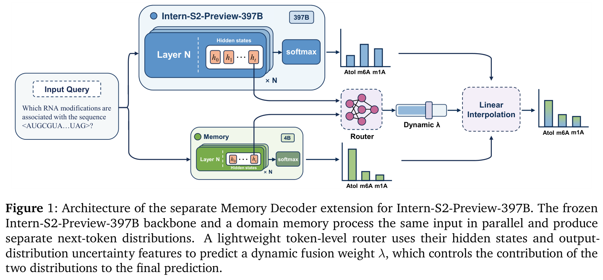
（接上页）步骤中，一个轻量的 token 级路由器决定记忆解码器应贡献多少 [78]。通过附加独立训练的记忆，可以在不修改 Intern-S2-Preview-397B 骨干模型的情况下引入新的科学能力。
这一设计源于科学专业知识的长尾性和持续演化特征。尽管 Intern-S2-Preview-397B 为科学推理、指令遵循、多模态理解以及工具增强的问题求解提供了强大的通用基础，但任何固定的后训练 checkpoint 都无法完全覆盖所有专业子领域、任务规程或新兴领域。针对每个新领域直接微调骨干模型并不理想，因为提升领域性能的参数更新也可能扰动模型的通用推理、agent 行为和多模态能力。Memory Decoder 将领域扩展从重写骨干模型转为模块化的记忆附加，避免了这一权衡。Intern-S2-Preview-397B 继续充当通用骨干模型，而领域知识通过即插即用的记忆提供，不损害通用能力。
训练。Memory Decoder 通过将基于检索的领域证据压缩到可复用的参数化模块中进行训练。给定领域 SFT 语料 \(\mathcal{D}_{sft} = \{(q^{(i)}, a^{(i)})\}_{i=1}^{N}\)，我们在答案侧位置构建 token 级数据存储。对于每个目标 token，前缀为 \(c_{t}^{(i)} = [q^{(i)}; y_{<t}^{(i)}]\)，键为 \(k_{t}^{(i)} = \phi (c_{t}^{(i)})\)，值为 \(y_{t}^{(i)}\)，其中 \(\phi (\cdot )\) 保持冻结。对该数据存储进行最近邻检索，得到下一 token 的软教师分布 [40]：
其中，\(\mathcal{N}(k_{t})\) 是检索得到的邻居集合，\(d\)(·,·) 是检索距离，\(\tau\) 为温度参数。记忆训练结合检索蒸馏与标准答案 token 的监督：
这里，\(\beta \in [0,1]\) 平衡检索教师与标准 SFT 答案。通过这一目标，Memory Decoder 学习将领域知识和反复出现的任务模式编码为即插即用的参数化记忆。
推理。在记忆增强变体的推理阶段，Intern-S2-Preview-397B 与 Memory Decoder 并行处理相同的 decoding 上下文。对于前缀 \(c_{t} = [x; y_{<t}]\)，冻结的 Intern-S2-Preview-397B 骨干模型产生 \(p_{S2}(\cdot | c_{t})\)，记忆解码器产生 \(p_{mem}(\cdot | c_{t})\)。轻量的 token 级路由器接收两个模型的隐藏表示，以及置信度和熵特征，并预测融合系数 \(\lambda _{t} \in [0,1]\)。最终下一 token 分布为：
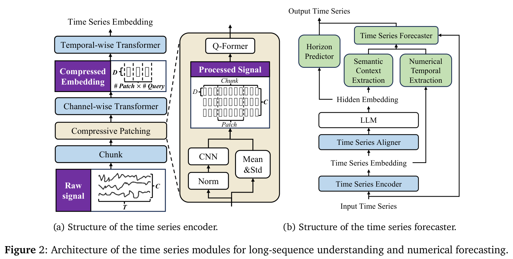
在路由器训练期间，Intern-S2-Preview-397B 与 Memory Decoder 均保持冻结，只在领域数据与通用指令数据的混合上优化路由器。除了融合分布的交叉熵之外，我们还对记忆权重施加带符号的线性正则项：
其中，领域样本的 \(s_{t} < 0\)，通用样本的 \(s_{t} > 0\)，\(\alpha _{s} > 0\) 控制正则化强度。
科学时间序列在序列长度、采样频率和通道依赖关系上常有显著差异，使高效且富于表达力的建模具有挑战性。Intern-S2-Preview-397B 在 Intern-S1-Pro 的基础上升级时间序列编码器，提升长序列处理效率并增强多通道表示学习。
如图 2a 所示，首先将输入时间序列划分为时间块，以便对长序列进行局部处理。每个块由压缩分片模块处理，该模块由归一化、基于 CNN 的局部特征提取和基于 Q-Former 的时间压缩构成。归一化时保留各通道的均值和标准差作为辅助统计量。随后，将提取的局部表示划分为时间片，每个片由带可学习查询的 Q-Former 压缩为固定数量的 token。编码器根据输入长度动态调整时间分片过程，使异构长时间序列的输出序列长度保持可控。Intern-S1-Pro 的时间序列编码器通过均值池化直接聚合多通道表示；相比之下，Intern-S2-Preview-397B 引入通道方向的 Transformer 编码器，先建模通道间依赖，再送入 Transformer 编码器主体建模全局时间上下文。时间序列编码器与 LLM 的连接保持不变。
与 Intern-S1-Pro 使用的上一版本相比，升级后的编码器将最大支持输入长度从约 240,000 个时间步增至 300,000 个。在最大序列长度下，推理速度约提高 5～6 倍，GPU 显存消耗降低到上一版本的约 20%。新架构不仅改善长序列处理，还能有效建模高频但序列较短的信号，这是
最后一句接续下一页。
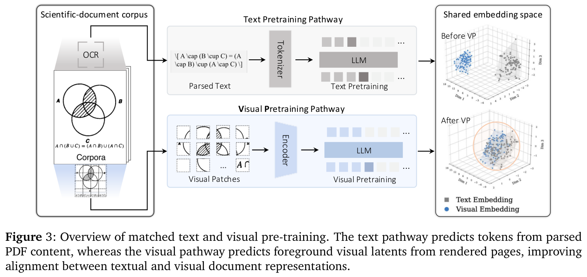
（接上页）Intern-S1-Pro 不支持的场景。这种能力进一步拓展了时间序列模块覆盖的学科：在既有天文学、地球科学、神经科学、生理信号分析与生物声学支持之外，新增雷达信号分析（约 MHz）。
除了时间序列理解，时间序列预测对于科学应用也至关重要，因为它使模型能够预测系统的未来状态，并支持更广泛的科学任务。Intern-S2-Preview-397B 集成时间序列预测模块，在多模态 LLM 框架内统一时间序列理解与生成。模型引入专用数值预测分支，而不是将数值生成为离散文本 token，在保持计算效率的同时保留数值保真度。
如图 2b 所示，预测模块引入以 LLM 和时间序列编码器的多模态表示为条件的预测分支。Q-Former 选择性地提取 LLM 的语义上下文与时间序列编码器的数值时间表示，并将两者融合，通过交叉 attention 为因果 Transformer 预测器提供条件，以生成未来序列。预测跨度预测器进一步解释预测指令，确定所需预测长度，实现跨不同预测跨度的灵活预测。
科学语料同时包含文本形式和视觉形式的知识。Intern-S2-Preview 不仅扩大文本 token 的规模，还通过保留文档布局、将视觉单元与周边科学上下文关联，以及检索高质量视觉样本用于多模态训练，强化科学数据基础。
除以文本为中心的科学训练外，Intern-S2-Preview 还引入视觉预训练（VP），作为轻量的模态扩展阶段。遵循 [100, 109]，VP 从渲染为页面图像的大规模无标注科学文档中学习，保留可能在文本提取过程中丢失的图像、表格、公式和布局信息。如图 3 所示，VP 直接从同一文档语料的视觉表示中学习，补充传统文本预训练。
给定页面图像 ℐ，冻结的视觉编码器提取视觉特征序列 \(\mathcal{Z} = E_{v}(\)ℐ\() = (z_{1}, \ldots , z_{N})\)。前景掩码 \(m_{i}\) 去除空白区域，随后按光栅扫描顺序排列保留的特征。所得序列被投影到 LLM 的隐藏空间，并以自回归方式建模：
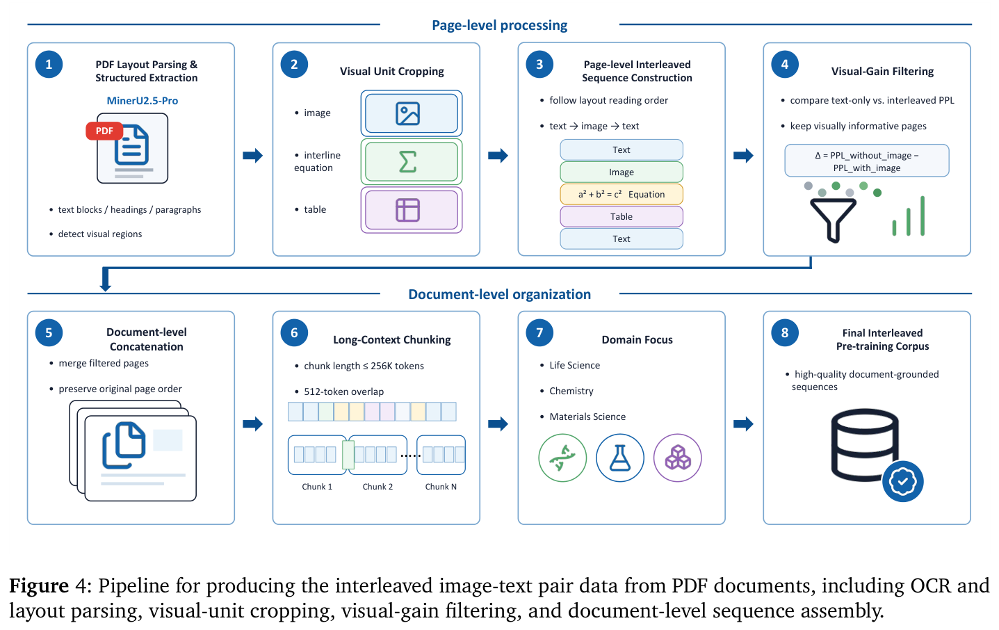
这里，\(W_{in}\) 表示视觉输入投影，\(\Phi _{\theta}\) 是自回归 LLM 骨干模型，\(\psi\) 是轻量视觉预测头。VP 采用对比式下一潜变量预测目标进行训练。对于预测索引与目标索引 \(t,j \in \mathcal{B}\)，经温度缩放的余弦相似度与匹配概率为：
VP 损失定义为：
其中，\(u_{t+1}\) 是 û\(_{t+1}\) 的正样本目标，\(\mathcal{B}\) 中其余目标作为批内负样本。在持续预训练中，文本与视觉样本在联合目标下交错使用：
视觉编码器保持冻结，LLM 骨干模型、视觉投影和预测头则进行优化。由于监督直接来自视觉特征，VP 既不需要 OCR 和布局解析，也不需要配对数据与人工标注。因此，它为文本预训练提供可扩展的补充，保留支持语言与多模态科学能力的文档结构和视觉模式。
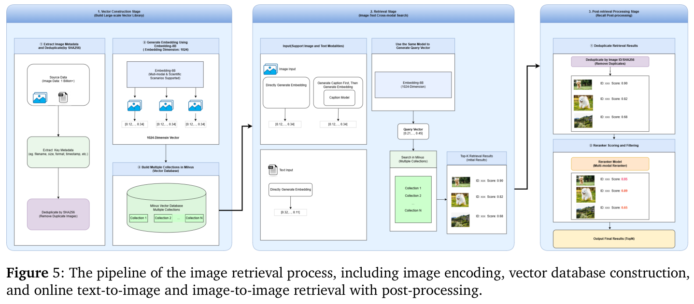
在多模态大模型预训练中，仅构建图文对不足以全面覆盖真实 PDF 文档的多模态理解需求。现有多模态预训练策略高度依赖图像描述数据，这类数据捕捉图像与局部文本片段之间的语义对齐，适合物体识别、图像描述和局部视觉语义建模。然而，PDF 中更关键的信息往往存在于图像、公式、表格与周围文本的上下文关系之中，包括布局位置、视觉元素前后的解释段落、文本引用、跨页推理链，以及长文档中知识的逐步组织。因此，我们进一步从 PDF 构建交错图文数据，如图 4 所示，使模型不仅学习图像描绘什么，还学习图像如何 embedding 文档叙述并参与知识表达与推理。
具体而言，我们首先使用 MinerU2.5-Pro [76] 对 PDF 文档进行 OCR 与感知布局的结构化解析。系统识别每页的文本块、标题、段落以及视觉信息丰富的区域。对于视觉内容，我们关注三类单元：普通图像、行间公式和表格。每个视觉单元根据边界框从原始 PDF 页面裁切，保存为标准化子图像。随后构建页级交错序列。对于每页，按布局阅读顺序与边界框顺序重新组织文本块和视觉单元，形成页级序列。为进一步筛选确实依赖视觉信息的高价值页面，我们引入基于视觉增益的质量过滤机制。受 Toolformer [64] 启发，我们分别计算两种条件下页面文本的语言模型 PPL：不包含视觉输入的纯文本条件，以及包含图像、表格或公式的交错条件。视觉增益定义为两个 PPL 之差。加入视觉信息后 PPL 显著下降，表明视觉内容对理解页面提供了有意义的支持。装饰图像、广告或相关性较弱的视觉元素通常产生较低视觉增益，而包含实验图、机理图、结构示意图、表格或公式的科学页面常使 PPL 明显下降。因此，我们结合人工审核与领域专属阈值，只保留视觉增益超过相应阈值的页面。
最后，按原 PDF 页序拼接过滤后的页级交错序列，形成文档级序列，再划分为适合长上下文 VLM 预训练的块，每块不超过 256k token，相邻块重叠 512 token。该流程聚焦生命科学、化学和材料科学，产出用于 VLM 预训练的高质量交错图文数据。
检索高质量数据是准备文本预训练语料的常见做法。然而，高质量图像数据的检索流程尚未得到充分探索。因此，如图 5 所示，我们引入
最后一句接续下一页。
（接上页）大规模图像检索流程，以召回高质量数据，并在训练中提高其采样比例，从而增强模型的多模态能力。
该流程依赖于构建大规模图像向量数据库。主要过程包括：1）从交付的数据源中提取图像及关键元数据，并依据图像 SHA256 值去重，确保向量数据库内图像的唯一性；2）使用 8B embedding 模型编码图像，生成 1024 维 embedding 表示；3）为平衡数亿规模数据的存储与检索性能，基于 Milvus 向量数据库构建多个集合，分片存储图像向量，以支持后续高性能检索。
在线检索阶段。系统支持文搜图和图搜图两种检索模式。两者均使用向量构建阶段的同一 embedding 模型进行向量编码，以维持向量空间的一致性。
对于不同类型的输入，处理流程如下。
召回后的后处理阶段。为进一步提升检索结果质量，系统对召回结果进行后处理，包括过滤重复样本、使用重排模型对候选结果重新排序并赋予质量分数，最后利用这些分数筛选检索结果。
从预训练 checkpoint 出发，我们为 Intern-S2-Preview 开发统一的后训练流程。该流程增强通用推理、指令遵循、工具使用及长程 agent 行为，同时进一步提升科学智能的三项核心能力：科学推理、跨科学模态生成，以及 agent 式科学问题求解。
如图 6 所示，该流程包含三个主要阶段。首先，在广泛的高质量示范混合数据上进行 SFT，以建立基础推理行为、响应格式、科学生成能力和工具使用模式。随后，在多样化科学与通用任务上开展可扩展多任务强化学习，进一步提升推理、生成与科学能力。与此同时，我们应用黑盒 agent 强化学习，在交互环境中培养专门策略，使模型通过外部工具和环境反馈解决复杂任务。最后，采用 OPD，将通用和专门策略获得的能力整合到单一统一模型中。
在应用强化学习之前，首个后训练阶段将预训练模型转化为可控助手。我们在覆盖广泛领域和交互场景的大规模高质量多模态数据集上进行 SFT。混合数据包括通用对话、指令遵循、安全对齐、代码生成与推理、图文理解、视觉感知与空间定位、工具使用、专门科学任务，以及长程 agent 轨迹。多样化监督为模型提供跨通用和科学场景的强大基础能力。
为确保数据质量，我们实施广泛的过滤、清洗和去重。对于需要显式推理的任务，我们通过拒绝
最后一句接续下一页。
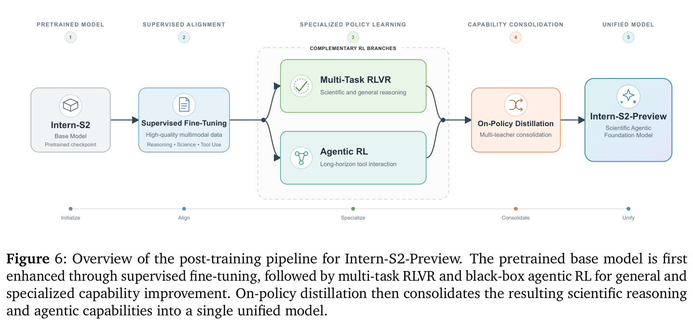
（接上页）采样，利用上一代模型 Intern-S1-Pro 及其他领先开源模型构建高质量 CoT 示范。所得样本进一步由语言模型和人类领域专家验证，以提高事实正确性、推理质量和格式一致性。这一精心整理的 SFT 阶段为后续强化学习阶段提供强大而稳定的初始化。
SFT 之后，强化学习用于在可验证目标下提升正确性、推理深度、科学生成与响应效率。扩大强化学习流程规模会带来若干实际挑战。Rollout 生成是强化学习的主要计算瓶颈。部分及异步 rollout 还会引入需要谨慎控制的 off-policy 效应。此外，平衡推理效率与模型性能仍然困难，多任务训练中的优化冲突可能阻碍跨领域稳定收敛。为应对这些挑战，我们引入带 off-policy 校正的部分 rollout、自适应长度正则化、用于加速 RL rollout 的 speculative decoding，以及稳健多任务优化。以下各节详细介绍后训练框架的各个组成部分。
长推理强化学习尤其容易受到响应长度长尾分布的影响。在同步 rollout 流程中，少量异常长的生成可能延迟整个 batch 的完成，使大部分 GPU 空闲等待慢任务 [30, 62, 111]。现有系统通常通过两种方式应对：将训练与推理同置并使用部分 rollout [62, 67, 111]，或将 rollout 生成和策略优化完全分离到独立 GPU 池 [30]。
评估不同 RL 阶段的计算特征和基础设施之后，我们基于 XTuner 训练引擎与 LMDeploy 推理引擎开发同置的部分 rollout 系统。如图 7 所示，在 rollout 生成期间持续向推理引擎补充新请求，以保持较高 GPU 利用率。当完成的轨迹数量足以组成训练 batch 时，尚在进行的 rollout 在当前生成位置暂停，而非终止或丢弃。保留其已生成前缀和 rollout 元数据，同一 GPU 池从推理切换到策略训练。策略更新之后，卸载训练状态，将更新后的模型参数同步到推理引擎，暂停的请求从保留的前缀继续生成。只有已完成的轨迹才纳入当前训练 batch。
这一暂停—恢复机制避免等待长尾生成，同时保留
最后一句接续下一页。
（接上页）已经用于未完成响应的计算。它还避免了训练与推理资源分离的全异步系统中常见且棘手的生产者—消费者平衡问题。然而，恢复后的轨迹可能包含在一次或多次策略更新前后生成的片段，因此同一轨迹中的不同 token 可能来自不同的行为策略版本。为此，我们记录每个采样 token 的行为策略版本及生成时的对数概率。
对于轨迹 \(i\) 中的 token \(y_{i,t}\)，重要性采样比率定义为：
其中，\(\pi _{beh(i,t)}\) 表示生成 token \(y_{i,t}\) 的行为策略版本，\(\pi _{\theta}\) 表示当前学习器策略。我们显式限制轨迹的陈旧程度：如果保留的最早片段生成于当前学习器之前超过三次策略更新，则丢弃该轨迹。
遵循 [55] 的裁剪重要性权重形式，我们截断重要性比率：
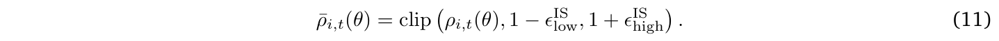
随后，裁剪后的比率作为停止 gradient 的重要性权重用于 REINFORCE 目标。与 PPO 式裁剪不同，后者裁剪替代目标，可能完全抑制信任区域之外 token 的 gradient；裁剪重要性权重则在限制更新方差的同时，保留每个未被掩码 token 的非零策略 gradient 贡献。
对于 MoE 策略，训练—推理不一致既来自专家路由差异，也来自两种执行引擎之间的数值差异。我们采用 Rollout Routing Replay（R3）[52] 处理前者：记录 LMDeploy 在 rollout 期间的专家选择，并由 XTuner 在评估对应 token 时重放。这确保 rollout 与训练遵循相同的专家路径。遵循 Intern-S1-Pro [112]，我们还使用对齐的混合精度配置：专家线性层采用 FP8，其余层采用 BF16；数值敏感操作，包括 apply_rope、RMSNorm、MoE 路由器、Gated DeltaNet [95] 的循环状态，以及语言模型输出头，均以 FP32 计算。
路由重放和算子级对齐之后，少量 token 仍可能因残余数值差异出现较大概率偏差。受 KPop [44] 启发，我们使用双向二元 KL 散度检测这些 outlier。令 \(p_{i,t}^{train}\) 与 \(p_{i,t}^{rollout}\) 表示训练和 rollout 引擎在匹配模型参数并重放路由决策的条件下产生的采样 token 概率。我们定义：
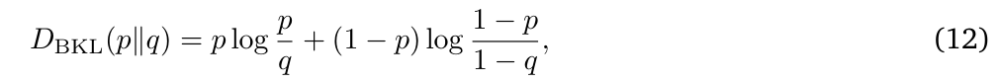
并构建 token 掩码：
R3 消除离散的专家路由不匹配，BKL 掩码则过滤剩余 token 级数值异常。公式（11）的裁剪重要性权重与公式（13）的 token 掩码纳入第 4.3.5 节所述的统一 RL 目标。
长 CoT 推理模型常在相对简单的问题上过度思考，即使大幅减少计算也能得到正确解，仍产生不必要的长推理轨迹 [16, 61]。现有方法通过显式长度感知奖励或约束 [3, 73]、随问题自适应的长度惩罚 [87]，或独立的长度控制微调阶段 [49, 103] 提升推理效率。这些方法虽有效，但基于奖励的方法引入可能与任务奖励冲突的辅助优化目标，而额外微调阶段则使后训练流程复杂化，并可能扰动早期 RL 阶段获得的能力。
我们提出一种自适应长度正则化方法，直接重新加权正优势响应的优势值，而不增加独立奖励信号。该方法遵循两项原则。首先，我们不
最后一句接续下一页。
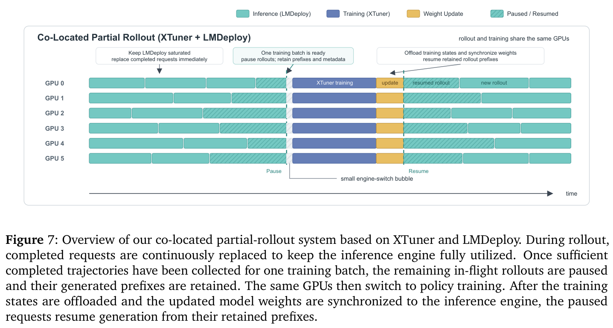
（接上页）对负优势响应施加长度正则化。由于错误响应可能因多种不同原因而失败，惩罚其长度可能过早抑制潜在有用的探索，从而降低模型性能。其次，只有模型在对应问题上达到足够高的通过率时，才启用长度正则化。这使模型能够自由探索困难问题，并且仅在基本掌握问题之后鼓励简洁推理。
对于每个问题 \(q\)，令 \(\mathcal{G}_{q} = \{1,\ldots ,G\}\) 为一组 \(G\) 个采样响应的索引，\(\hat{A}_{i}\) 表示响应 \(i\) 的原始优势。正优势响应集合定义为：
正则化后的优势为：
其中，\(\tau\) 控制启用长度正则化所需的最小正优势响应比例。依赖长度的权重 \(w_{i}\) 定义为：
其中：
\(L_{i}\) 为响应 \(i\) 的推理长度，\(\alpha\) 指定分配给长响应的最小权重，\(\gamma\) 控制随长度衰减的形状，\(\epsilon\) 确保数值稳定性。
在正优势响应中，较短解获得较大权重，而较长解被降低权重，但仍保留正优势。归一化项近似保留正优势总量，因此改变成功响应之间的相对偏好，而不显著改变整体优化尺度。如果正优势响应比例低于 \(\tau\)，或某个响应的优势非正，则其优势保持不变。因此，该方法能够自适应地从困难问题上的探索，转向模型已经掌握的问题上的效率优化。
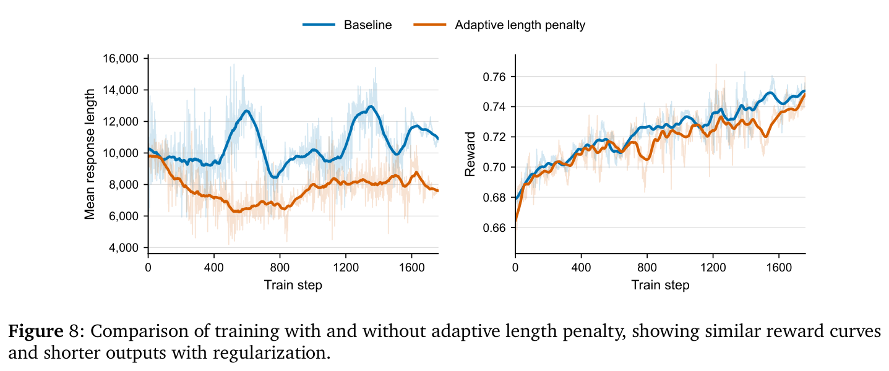
如图 8 所示，我们比较了使用和不使用自适应长度正则化训练的 Intern-S2-Preview-35B。两种设置获得相近的奖励曲线，而自适应长度正则化显著减少平均输出长度。这些结果表明，所提出的方法在不牺牲模型性能的情况下提高推理效率。
尽管同置的部分 rollout 系统显著提高 GPU 利用率，rollout 生成仍是 RL 训练中最耗时的阶段之一，因为长推理轨迹仍必须自回归生成。Speculative decoding 提供一种互补的加速方法。轻量草稿模型先提出多个候选 token，随后由当前策略模型通过精确拒绝采样过程并行验证 [14, 43]。由于这一验证过程保留策略模型的采样分布，speculative decoding 可加速 rollout 生成而不引入额外 off-policy 偏差。近期研究通过感知并发的在线草稿学习、持续演化的草稿模型、树结构 rollout 缓存以及与 RL 基础设施的系统级集成，探索在 RL rollout 中应用 speculative decoding [13, 15, 37, 101]。
将 speculative decoding 用于 RL 的核心挑战在于策略模型在训练中持续演化。因此，固定草稿模型随策略更新日益陈旧，导致输出分布的不匹配扩大，token 接受率逐步下降。为解决这一问题，我们使用最新策略生成的轨迹在线训练草稿模型。每次 RL 迭代，在新收集的 rollout 状态上，利用当前策略的 token 分布更新草稿模型，并对策略模型停止 gradient。这种在线适应使草稿模型在 RL 训练全程持续跟踪演化的 rollout 分布。
我们使用混合 LK Loss [63] 训练草稿模型，它将前向 KL 散度的稳定优化特性与总变差距离对接受率的直接优化相结合。对于 rollout 状态 \(s_{t,k}\) 处的第 \(k\) 个草稿位置，目标策略与草稿模型分布记为：
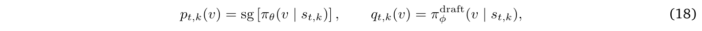
两个分布均在 rollout 采样温度下计算，sg[·] 表示停止 gradient 算子。前向 KL 散度与总变差距离分别定义为：
以及：
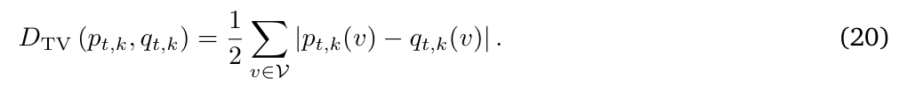
在无损推测采样中，token 的期望接受概率等于目标分布与草稿分布的重叠：
遵循混合 LK 形式，我们将两个散度目标组合为：
混合系数由接受率自适应确定：
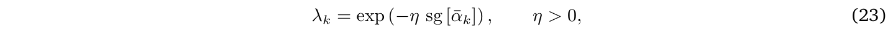
其中，\(\bar{\alpha}_{k}\) 是第 \(k\) 个草稿位置在序列维度与 batch 维度上聚合的接受率。完整的在线草稿训练目标为：
\(K\) 是预测的草稿位置数量，\(\mathcal{T}_{k}\) 包含第 \(k\) 个草稿步的有效训练位置。在我们的实现中，草稿模型预测 \(K\) = 4 个未来位置的 token，自适应系数超参数设为 \(\eta = 3\)。
当草稿模型与当前策略对齐较差时，接受率 \(\bar{\alpha}_{k}\) 较低，\(\lambda _{k}\) 接近 1。因此，目标由前向 KL 项主导，它提供平滑且尺度良好的 gradient，使草稿分布快速对齐演化中的策略。随着草稿模型更好地对齐、接受率提高，\(\lambda _{k}\) 降低，TV 部分获得更大的权重。由于最小化 TV 距离等价于最大化分布重叠，目标逐步从稳定的分布匹配转向直接优化接受率。
在线草稿适应与混合 LK 目标使接受率随 RL 训练推进持续提高，而非随着策略演化而下降。在我们的大规模训练中，speculative decoding 最终将 rollout 生成加速约 2 倍，并将整体 RL 训练流程端到端加速 1.7 倍。这些结果表明，在线草稿学习提供了无损且有效的加速机制，与部分 rollout 系统互为补充。
我们在异构任务的混合上对 Intern-S2-Preview 进行 RL，这些任务在结构、解的多样性及策略探索的不确定性方面不同。这使同一策略下产生不同的熵状态，导致全局或 token 级熵调节不足以满足异构的探索需求 [20, 22, 66, 94]。这种异构性还会使基于组的策略优化方法产生依赖熵的偏差，使不同提示组的优势信号在统计上不可比较。
我们采用 GEPO[21]，直接从已有分组样本估计组级熵，将其作为诊断信号，识别并缓解熵异构性导致的优化偏差。具体而言，GEPO 衰减低熵组的正优势，防止过度利用进一步扩大熵差；同时衰减高熵组的负优势，避免过早抑制探索。这种缩放是不对称的，因为低熵组对激进干预更敏感，可能触发长度坍缩，因此需要比高熵组更温和的衰减。
在 GRPO 和 RLOO 中，对于每个提示 \(x\)，从 \(\pi _{\theta}(\cdot |x)\) 采样组响应 \(\{y_{1},\ldots ,y_{K}\}\)，组级熵定义为：
随后，对每个响应的原始优势 \(\{A_{i}\}_{i=1}^{K}\) 进行塑形：
其中，\(\alpha _{high} \in (0,1) > \alpha _{low} \in (0,1)\) 为缩放系数，\(\mathcal{H}_{low}^{(t)}\) 和 \(\mathcal{H}_{high}^{(t)}\) 分别为训练步 \(t\) 的熵下阈值与上阈值。
GEPO 不强迫异构任务趋向共同熵目标，而是保留依赖任务的探索状态，同时重新平衡它们对策略更新的有效贡献。它既不需要显式任务标注，也不需要额外 rollout，可直接集成进已有基于组的策略优化流程，为异构后训练任务上的稳定联合优化提供可扩展机制。
我们的推理 RL 遵循 Intern-S1-Pro [112] 采用的留一法 REINFORCE 形式，并加入上述稳定性与效率技术。对于每个问题，我们采样一组 \(G\) 个响应，并获得序列级验证器奖励 \(\{R_{i}\}_{i=1}^{G}\)。遵循 DAPO [96] 的动态采样策略，在线过滤奖励完全相同的问题组，并以新采样组替换。对于每个保留组，初始留一法优势计算为：
随后应用前述两种优势塑形机制。GEPO 首先根据组级熵调整组相对优势，平衡异构任务的探索。随后，将自适应长度正则化应用于熵调整后的优势，仅对正优势响应比例超过激活阈值的问题组鼓励更短的成功推理轨迹。用于策略优化的最终优势可概括为：
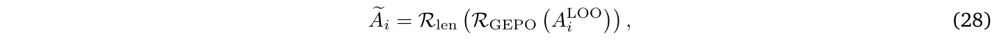
其中，\(\mathcal{R}_{GEPO}\) 与 \(\mathcal{R}_{len}\) 分别表示上述熵控制及自适应长度正则化变换。这一顺序确保长度权重作用于最终经过熵调整的优势，而非修改验证器奖励。
给定部分 rollout 训练缓冲区 \(\mathcal{B}\)，我们通过下式优化策略：
\(\bar{\rho}_{i,t}\) 为公式（11）定义的裁剪 token 级重要性权重，\(m_{i,t}^{BKL}\) 为公式（13）定义的数值一致性掩码，sg[·] 表示停止 gradient 算子。响应 \(y_{i}\) 中所有策略生成 token 共享序列级优势 \(\tilde{A}_{i}\)。
这一目标结合三种互补的稳定机制。裁剪重要性权重校正暂停—恢复部分 rollout 及重复 mini-batch 更新引入的策略不匹配。R3 对齐 rollout 与训练引擎的专家路由决策，BKL 掩码则在路由和算子对齐后移除残余数值异常。同时，GEPO 与自适应长度正则化重塑序列级优势，平衡依赖任务的探索与推理效率。Speculative decoding 保留策略的采样分布，因此在不修改公式（29）的情况下加速 rollout 生成。
我们使用 Muon 优化器 [39, 48]，学习率为 \(1\times 10^{-6}\)，权重衰减为 0.01。每个 rollout batch 包含 8,192 个已完成响应，通过 8 个 mini-batch 更新步优化。最大
最后一句接续下一页。
（接上页）生成长度设为 65,536 token。该训练配置与上述稳定机制共同支持异构科学和通用任务上的高效、稳定推理 RL。
推理 RL 改善单次响应与面向生成的行为，但科学 agent 还必须从包含工具、文件、外部程序和环境反馈的交互会话中学习。我们围绕 harness × task 抽象开发统一 agent RL 框架，将 agent 执行接口与任务分布解耦。Harness 规定 agent 如何实例化、驱动和观测，task 规定初始环境、可执行目标以及由验证器定义的结果。两者组合将异构 agent 执行转化为统一形式的 RL 经验：包含显式环境、可观测动作—观测历史及自动结果信号的交互式 rollout。
这一形式使 agent 训练能够沿两个互补维度扩展。在 harness 维度，我们支持可直接编排控制循环的白盒实现，以及通过原生 CLI、SDK 或模型 API 集成的黑盒运行时。在任务维度，我们覆盖专门编码与终端环境，以及自演化任务合成系统产生的通用任务。所得框架拓展 agent 行为与任务分布，同时保持统一的 rollout、验证与训练协议。
近期 agent RL 系统强调，将 agent 执行与策略优化解耦，并从异构 agent 运行时恢复可训练经验的重要性 [10, 50, 89]。Intern-S2-Preview 建立在我们一系列 agent 学习与评估研究之上。Agent-FLAN 考察有效 agent 调优的数据与优化；Lagent 提供构建语言 agent 的模块化框架；T-Eval 和 CIBench 研究逐步工具使用与可执行代码解释器行为；MindSearch 研究长程信息搜索与整合；SciExplore 将 agent 评估扩展至现实科学导航与跨来源综合 [17–19, 42, 70, 98, 106]。更新近的工作研究通过过程续接学习实现行为对齐、无 CoT 监督下 next-chunk RL 与 SFT 的作用，以及通过技能图与渐进验证实现自演化任务合成 [28, 29, 32, 69, 71, 102]。这些工作共同促成本文的 harness × task 抽象：一个可独立改变 agent 运行时和任务分布，同时保持统一 rollout、验证、轨迹组装和 RL 优化的公共系统。
如图 9 所示，基础设施由统一 rollout 运行时与感知轨迹的经验组装层构成。前者将异构 harness 与可执行任务组合，在统一会话契约下运行；后者把语义轨迹和验证器反馈与策略优化所需的精确 token 级证据关联。
统一执行运行时。在 rollout 时，Agent Rollout Runner 接收 harness—task 对，配置其执行环境，并管理交互，直至正常完成或满足终止条件。Harness 驱动 agent，Judger Adapters 针对同一会话状态和执行产物进行结果验证与过程标注。Shared Sandbox Provider 抽象了本地、远程及自定义后端上的环境创建、命令和工具执行、隔离、错误处理及资源清理。因此，agent 控制、环境配置和验证可独立演化，并跨任务重新组合，无需为每种配对构建专用 rollout 流程。
不依赖特定 Harness 的 agent 集成。Agent Gateway & Adapters 为白盒、黑盒与自定义 harness 实现提供稳定接口。白盒循环可直接编排，黑盒 harness——包括 OpenClaw、Claude Code、OpenCode、OpenHands 和 Mini-SWE——则保留原生消息、工具循环与控制流 [79, 92]。适配器转换会话生命周期事件、模型调用及交互产物，无需运行时访问或重新实现 harness 内部的 agent 逻辑。因此，添加新 harness 只需要薄的集成适配器，而不需要新的 RL 执行栈。
对客户端透明、感知训练的模型服务。不同黑盒 harness 期望不同模型协议。LLM 服务层接受 OpenAI Chat Completions、OpenAI Responses 和 Anthropic Messages，支持普通生成和流式生成。请求由网关标准化，并
最后一句接续下一页。
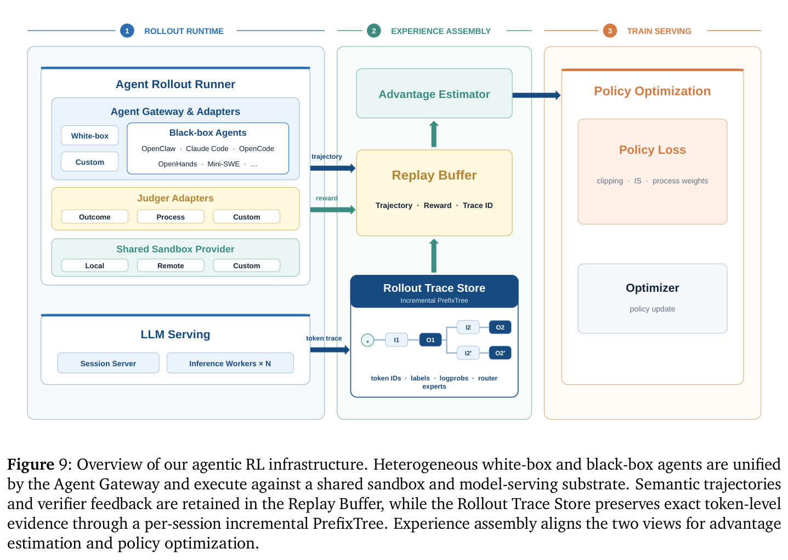
（接上页）转发到分布式推理 worker，而流式文本、推理和工具调用事件以原生形式回传给 harness。从客户端看，这仍是普通模型服务。同时，服务层透明地捕获仅用于训练的证据，包括精确输入及输出 token ID、rollout 对数概率，以及逐 token 的 MoE 路由专家，而不向 agent 控制逻辑暴露这些扩展。
这一服务路径实现 token-in–token-out（TITO）接口。对于每次模型调用，Session Server 复用该会话已经记录的精确 token 化前缀，仅对新追加上下文进行 token 化，并将所得 token ID 直接发送给推理引擎。返回的 token 与策略统计量从传递给 agent 的同一响应流中捕获。对于稀疏 MoE 模型，Rollout Router Replay（R3）还记录 rollout 时的专家选择，以便在训练中复用。因此，TITO 保留采样 token 序列，R3 保留产生该序列的条件计算路径。
感知轨迹的经验组装。Rollout 运行时产生交互的两种互补视图。Agent Runner 与 Judger Adapters 产生语义经验——动作—观测轨迹、结果奖励、过程标注和会话元数据——并保存在 Replay Buffer 中。LLM Serving 产生模型执行证据——token ID、损失标签、行为对数概率和路由专家——写入 Rollout Trace Store。将这些视图分开，使面向环境的逻辑与模型专属训练表示解耦，同时保留从 agent 动作到生成它的策略 token 的无损路径。
Trace Store 将每个会话组织为增量 PrefixTree。每个节点表示新追加的上下文增量或助手响应，存储其 token ID、标签、rollout 对数概率及路由专家。最长前缀匹配复用会话的稳定历史，只追加新观测片段。当轨迹被选中训练时，存储系统生成对应的根到叶路径。系统指令、用户消息及工具观测不计入损失，而符合条件的策略生成片段保留训练标签。
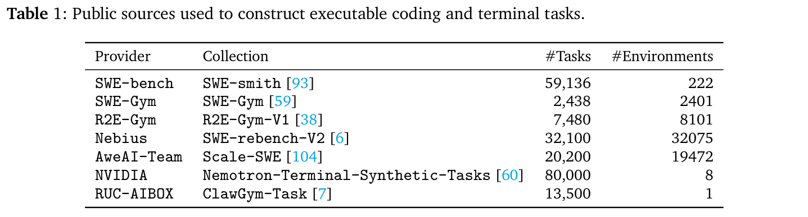
除增量存储外，PrefixTree 还保留多轮与分支交互中模型调用的谱系及精确边界。因此，它建立语义 agent 动作与 rollout 时 token 区间的稳定对应。经验组装按会话和片段关联 Replay Buffer 记录与 token 轨迹，计算优势，并向通用 RL 训练器导出可供模型使用的经验。这一对应关系也为下文所述感知过程的信用分配提供基础。
我们从两类互补来源构建任务分布。针对专门编码与终端能力，从公开发布的数据集中整理可执行任务，涵盖挖掘实例和合成实例。针对更广泛能力，自演化任务合成系统将社区贡献的技能转化为通用 agent 任务。两类任务均标准化为统一契约，包含初始化执行环境、自然语言目标及自动验证器。因此，异构任务可与不同 harness 组合，并在同一 RL 框架内训练。
编码与终端任务。这一分支使用表 1 汇总的公开来源。部分数据集挖掘真实 GitHub issue、pull request 和仓库历史，另一些则以程序化方式构建软件工程环境，或合成终端与工作区任务。它们共同覆盖仓库级问题解决、调试与测试、软件设置、文件与数据操作，以及更广泛的基于终端的问题求解。
对于各来源，我们将基础仓库或容器及所需资源实际配置为初始环境，将 issue 描述或指令转化为任务目标，并保留其测试或奖励程序作为验证器，从而将每个实例映射到统一任务契约。这种标准化保留来源特有的执行与奖励语义，同时向 rollout 运行时暴露一致接口。尤其是，这些任务仍依托真实运行环境，而非退化为静态指令—响应对，因此奖励反映程序行为、仓库状态和任务专属执行结果。
自演化通用 agent 任务。为了覆盖更广泛 agent 能力，我们构建以图 10 所示闭环数据流程组织的自演化任务合成系统。系统以从多个来源收集的社区贡献技能为种子。这些技能描述具体用户工作流及所需工具与依赖，为可执行任务合成提供自然基础。首先过滤不可行、不安全、低质量或冗余候选，包括涉及不可用身份验证、外部交易或有毒内容的工作流；再进行领域平衡重采样，防止高频技能领域主导合成分布。
单个技能常描述局部工作流，而通用 agent 必须在更长跨度中协调多种能力。因此，我们构建技能状态图，节点表示可观测环境状态，边表示从技能中提取的状态变换能力。只有输入与输出状态兼容时，技能才会组合。从图中采样不同长度的路径，产生跨度与复杂性各异的能力序列。
每条采样路径通过渐进流程转化为可执行任务包，依次构建环境、任务与验证器。每个阶段均配有可执行校验器。基于规则的检查验证结构正确性、依赖解析和可执行性，基于评分准则的检查评估语义质量与跨阶段一致性。失败触发阶段内局部修复或重新生成，只有通过验证的产物才传至下游。这将合成错误局部化，并减少
最后一句接续下一页。
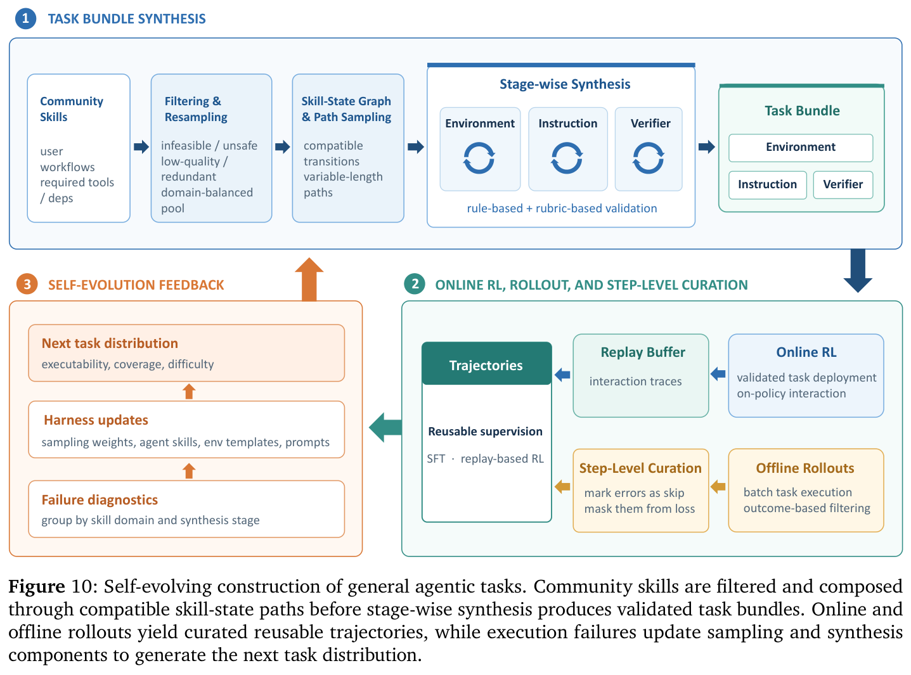
（接上页）环境、任务规范和验证器之间的不一致。
通过验证的任务部署到在线 RL 中，也进行 rollout 以构建可复用的离线训练数据。通过基于结果过滤的候选轨迹接受步骤级整理。每个交互步骤按行为类型标注，既覆盖正常推进，也覆盖工具使用错误、重复失败尝试、无效恢复、过早终止、协议违规、无依据假设，以及幻觉观测。错误步骤仍保留在交互上下文中，但可标为 skip 并排除在模仿损失之外，其余响应作为优化目标。这种选择性掩码避免模仿有缺陷的中间行为，又不破坏后续动作的因果上下文。
下游执行进一步暴露合成任务分布的系统性弱点。我们按技能领域与合成阶段汇总执行失败和验证器反馈，利用这些统计量更新技能采样权重、合成技能、环境模板及各阶段提示。更新后的系统重新采样能力路径并生成下一轮任务分布，根据观测到的 agent 行为逐步提高可执行性、覆盖范围和难度。
基于 agent 经验的优化带来超出单轮响应优化的挑战。验证器为完整的工具交错会话评分，而只有选定的策略生成片段可训练。此外，可执行环境使奖励通道暴露于答案泄露、测试篡改及其他 reward hacking 行为。我们首先将最终结果与会话可训练片段对齐，再通过感知过程的优势控制细化信号，最后强化验证器，防止奖励泄露。最后考察不同任务家族与 agent harness 下的优化行为。
感知会话的结果信用分配。agent 会话可能包含由系统指令、用户消息、工具调用和环境观测隔开的多个助手响应。然而，这些片段
最后一句接续下一页。
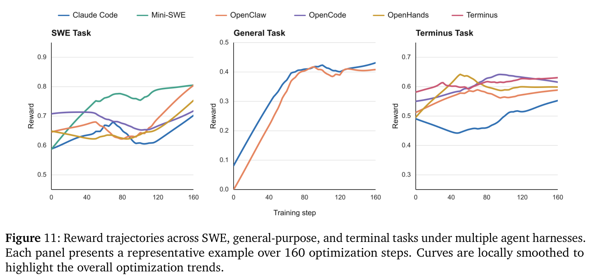
（接上页）共同解决一个任务，并获得一个最终结果奖励。对于同一任务的每个 rollout 组，我们遵循组相对优化范式 [65]，根据 rollout \(i\) 的完整会话奖励计算组相对优势 \(A_{i}\)。同一会话优势分配给其轨迹中所有符合条件的策略生成片段，而非将每次模型调用视为独立获奖的回合。Token 级标签将非策略上下文排除于损失之外，PrefixTree 则保留可训练响应片段的精确边界。
感知过程的优势控制。如果会话尽管存在格式错误输出、无效或重复工具调用、不必要恢复尝试或异常终止，却最终成功，那么仅依据结果分配信用可能强化不良中间行为。我们将结果评估与过程反馈分开，体现结果监督与过程监督的区别 [47]。结果验证器判断任务是否解决，过程标注器则对出现确定性过程错误的具体助手消息附加 adv_penalty。这些标注不改变会话奖励或 token 标签。
PrefixTree 将每条标注消息映射到其精确可训练 token 区间。令 \(w_{i,k} \in [-1,1]\) 表示会话 \(i\) 中片段 \(k\) 的过程权重。对于该片段中的可训练 token \(t\)，使用：
非可训练 token 的优势设为零。过程权重能够抑制或反转以下行为的正信用：解析和格式错误、无效工具名或参数、重复或失败的工具调用，以及触及上下文、轮数或会话限制而终止。它们只应用于正优势，因此保留失败轨迹的负向学习信号。简言之，结果奖励决定任务是否解决，过程权重决定中间行为是否应获得正信用。
验证器完整性与防泄露。对于可执行编码任务，我们将 agent 可见的执行产物与仅用于评分的信息隔离。标准补丁、留出的测试和精确评分测试标识不进入 rollout 工作区，只在 agent 执行之后供评分基础设施使用。仓库历史清理为单个基线提交，并移除远程引用，防止 agent 从 Git 元数据中恢复目标修复。必要时，也从 agent 可见指令中省略直接暴露上游 issue 的任务标识。
评估时，在 agent 停止后恢复或覆盖规范测试文件，并在 agent 的源代码修改之上应用标准测试补丁。因此，修改 agent 可见测试不能直接改变评分程序。对于软件工程任务，我们采用保守的全部正确语义，要求目标修复与回归检查均通过；对于具有规范预期测试状态映射的任务，观测结果必须完全匹配。缺失评分产物、执行失败和无法解析的
最后一句接续下一页。
（接上页）验证器输出与真正任务失败分开记录，防止基础设施错误被解释为成功的策略行为。这些措施共同确保奖励与可执行任务状态的真实变化关联，而非来自访问隐藏答案或破坏验证器。
跨任务与 Harness 的优化。软件工程、通用和终端任务共享同一训练与经验组装路径，无需为每个 harness 引入任务专属 RL 流程。图 11 汇总代表性奖励轨迹。Claude Code 与 OpenClaw 上的通用任务均快速改善后趋于稳定。更长跨度的 SWE 和终端任务表现出更依赖 harness 的暂态变化，但所展示轨迹在优化区间中改善或恢复。这些不同动态符合预期：harness 决定交互策略与上下文构建，任务决定环境及奖励语义。因此，共同上升的趋势表明通用轨迹、信用分配与优化栈对不同 harness—task 组合仍有效，而非表明其绝对奖励尺度可直接比较。
最后阶段将分别优化的推理策略与 agent 策略的互补优势融合到发布的统一模型中。尽管混合强化学习使单一策略获得广泛能力，但联合优化高度异构的推理与 agent 任务可能引入优化冲突，使模型无法充分利用领域专属训练信号。因此，我们从同一 SFT checkpoint 分别训练两个专家策略：通过混合推理 RL 得到推理专家，通过大规模黑盒与白盒 agent RL 得到 agent 专家。随后采用 OPD，将互补能力整合到单一统一模型。与训练大量细粒度领域专家的既有多教师方法 [51, 56, 107, 108] 不同，我们围绕两个宽泛能力领域组织专门化。初步评估表明，在我们的场景中，为许多细粒度领域独立训练教师会产生大量 RL 和基础设施成本，而额外收益有限。双专家设计在专门化质量、训练成本和蒸馏复杂度间取得较好平衡。
OPD 的关键挑战在于学生与教师的分布不匹配。由于教师在学生采样的前缀上接受评估，较大的策略差异可能使学生轨迹落到教师可靠支持范围之外，导致监督噪声较多或缺乏信息。在我们的设置中，两种专家策略均源于同一 SFT checkpoint，因此保留大致兼容的生成行为。为进一步降低初始差异，我们遵循 Nemotron 3 Ultra [56] 引入的 warmup 策略。具体而言，利用推理和 agent 专家生成高质量轨迹，并在原始 SFT 模型上进行轻量 SFT warmup。所得 checkpoint 作为 OPD 的初始学生。Warmup 使学生接触两种教师特有的推理模式与交互行为，在 OPD 优化开始前增加学生生成轨迹与教师支持分布的重叠。
OPD 期间，每个问题被分配到推理或 agent 领域，并选择相应专家作为教师。令 \(d\in\{\mathrm{rea},\mathrm{agt}\}\) 为领域，\(\mathcal{D}_{d}\) 为其提示分布，\(\pi _{T_{d}}\) 为对应教师策略。给定问题 \(q\)，学生策略 \(\pi _{\theta}\) 先生成 on-policy 轨迹 \(y\)，选定教师评估学生生成的前缀 \(s_{t} = (q,y_{<t})\)。遵循 Nemotron 3 Ultra [56]，完全 on-policy 目标最大化负的反向 KL 散度：
\(\lambda _{d}\) 控制各领域采样或损失权重，\(H\) 表示轨迹长度。等价地，这一目标在学生自身诱导的状态上最小化：
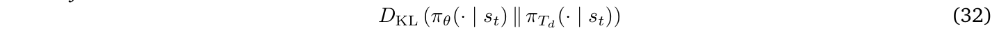
与基于稀疏轨迹级奖励的 RL 目标相比，OPD 在整个生成轨迹上提供来自相应专家的密集 token 级监督。
现有 OPD 系统可能在每个 token 位置传输完整教师分布或其 top-k 近似 [23, 51]。然而，这些方法的通信和存储成本对于
最后一句接续下一页。
（接上页）我们 256K token 的最大序列长度变得相当高。在每个位置传输全词表 logits，甚至 top-64 教师 logits，都会在教师评分 worker 与学习器 worker 之间产生大量通信负载。由于教师具有相同 SFT 起点，且 warmup 进一步减小与学生的策略差异，我们发现仅传输每个采样 token 的教师对数概率就足以实现稳定蒸馏。这使教师传输量从 \(O\)(HV) 或 \(O\)(Hk) 降至 \(O\)(\(H\))，其中 \(V\) 为词表大小，\(k\) 为保留的教师 logits 数量。
为支持对部分 rollout 基础设施生成的轨迹进行策略更新，我们采用与推理 RL 相同的裁剪重要性加权 REINFORCE 形式。唯一区别在于优势的构建。对于每个采样 token \(y_{i,t}\)，采样 token 蒸馏优势定义为：
其中，\(\pi _{T_{d}}\) 为分配给领域 \(d\) 的教师，\(\pi _{prox}\) 为用于构建蒸馏信号的冻结近端学生策略，sg[·] 表示停止 gradient 算子。当教师给予采样 token 的概率高于近端学生时，优势为正，否则为负，相应地提高或降低采样动作的概率。
与公式（10）相同，token 级重要性采样比率直接定义在当前学习器策略与生成该 token 的行为策略版本之间：
使用与推理 RL 相同的区间裁剪该比率：
令 \(\mathcal{B}_{d}\) 为分配至领域 \(d\) 的部分 rollout batch，\(N_{d}\) 为该领域轨迹数，\(\mathcal{T}_{i}\) 为轨迹 \(i\) 中策略生成 token 位置的集合。学生使用下式优化：
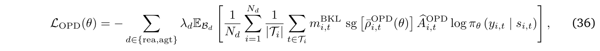
\(\lambda _{d}\) 控制各教师领域的贡献，\(m_{i,t}^{BKL}\) 与推理 RL 使用相同的数值一致性掩码。非策略 token，包括提示、环境观测、工具输出和填充 token，通过 \(\mathcal{T}_{i}\) 排除。
公式（36）与公式（29）的统一推理 RL 目标具有相同优化形式。两者均使用停止 gradient 并经裁剪的行为策略到当前策略的重要性权重，以及 R3 路由对齐和基于 BKL 的数值掩码来优化当前策略。唯一区别是优势：推理 RL 使用由验证器奖励、GEPO 和自适应长度正则化导出的序列级优势，OPD 使用公式（33）中的 token 级教师—学生对数概率差。
通过共享初始化、教师轨迹 warmup 和采样 token on-policy 监督，我们的方法避免了全词表或 top-k 蒸馏的复杂度与通信开销，同时保持长轨迹上的稳定优化。所得学生将混合推理策略的科学推理能力与 agent 策略的长程交互能力整合到统一 Intern-S2-Preview 模型中。
我们从科学任务与通用任务两个角度，在广泛基准上进行大量实验评估 Intern-S2-Preview-397B，覆盖纯文本与多模态设置。本节先介绍评估设置，再简述使用的基准，随后比较 Intern-S2-Preview-397B 与其他最先进模型的性能。
Biology-Instructions [34] 是多组学基准，评估模型在不同生物尺度上的序列理解能力。它将基于生物序列的预测任务与高级推理要求结合，要求模型解释复杂的基因组、转录组和蛋白质组数据。
Mol-Instructions [27] 旨在通过三类主要任务弥补专业 LLM 训练的不足：面向分子、面向蛋白质，以及面向生物分子文本的任务。它包含大量指令遵循样本对，帮助模型熟练处理复杂生物分子结构和功能描述。
MolecularIQ [9] 评估语言模型能否对以 SMILES 表示的分子图进行忠实推理。它包含涉及 849 个按结构留出的分子的 5,111 个可符号验证问题，分为计数、索引和约束生成任务家族。采样流程平衡推理深度、多任务负载、分子复杂度与答案分布，支持精细定位分子结构推理中的失败。
SciReasoner [80] 评估跨物理、化学、医学等学科的科学推理，共 9 个领域、149 项具体任务。它由十个子基准组成统一套件，问题形式包括选择、填空及基于规程的步骤性问题，旨在评估知识检索和复杂演绎推理。
TOMG-Bench [45] 评估开放领域的自然语言引导分子生成。它包含分子编辑、分子属性优化与定制分子生成三项主要任务，每项分为三个子任务，每个子任务包含 5,000 个测试样本。自动评估框架衡量生成分子是否有效、是否满足指定结构或属性约束，以及是否保留适当相似性或新颖性。
MP20 是针对每个晶胞最多 20 个原子的材料的条件晶体结构生成基准。任务要求根据化学组成，在周期性与对称性等物理约束下预测精确原子坐标和晶格参数。它包含 27,136 个训练样本与 9,046 个测试样本，提供标准结构目标，不包含 CoT 推理标注。
ProteinBinder-9 聚焦评估针对九个具有生物学意义的蛋白靶标进行从头蛋白结合体设计。该基准借鉴 ODesign——用于生物分子相互作用设计的全原子生成世界模型——引入的蛋白质—蛋白质相互作用设计场景 [99]。对于每个靶标，任务是生成满足预定义结合界面，并通过多阶段结构及物理化学评估流程的蛋白结合体。候选骨架与序列通过互补计算模型生成和评估，包括 RFdiffusion [82] 等结构生成方法，以及 AlphaFold 3 [1] 的生物分子复合物预测。所得候选进一步按界面置信度、结合能与分子接触标准评估。ProteinBinder-9 覆盖不同靶蛋白与界面几何，测试设计系统能否泛化到单一蛋白家族或结构场景之外。我们报告每个靶标通过完整评估流程的候选数量与比例，以及全部九个靶标的汇总结果。ProteinBinder-9 旨在为端到端蛋白结合体设计系统提供可复现测试平台，而非评估孤立序列生成或结构预测性能。
XLRS-Bench [77] 聚焦极大、超高分辨率遥感（RS）图像；该基准定义 16 项子任务，评估 6 类感知能力与 4 类推理能力。它要求 MLLM 处理复杂语义关系，并辅助高分辨率地理空间场景中的现实决策。
MicroVQA [11] 聚焦显微成像研究，包含跨不同成像模态的 1,042 道专家整理选择题。它评估生物学工作流中的三项关键推理能力：专家级图像理解、假设生成与实验提案。
SFE [110] 是专家级基准，包含跨 66 项多模态任务的 830 个已验证视觉问答（VQA）样本对。该数据集覆盖五个高价值科学学科，使用真实原始科学数据格式，探测模型的感知、理解与高级
最后一句接续下一页。
（接上页）推理认知能力。
ObsCrisis-Bench [57] 评估根据多光谱卫星观测以及可选气象站测量，对极端天气和地球物理灾害进行多模态推理。官方数据集卡报告 4,202 个视觉问答样本，覆盖 127 个事件、八类灾害及 61 个国家。任务涵盖跨多个观测时间步的早期预警、事件类型和时间预测、影响评估及灾后恢复分析。
SciCode [75] 评估语言模型为现实科学研究问题编写可执行代码的能力，而非传统算法练习。它包含 80 个主问题，分解为跨 16 个科学子领域的 338 个子问题，包括物理、数学、材料科学、生物和化学。每个问题结合科学知识、推理及代码合成，并配有可选背景材料、科学家编写的参考解和可执行测试。
SGI-Bench [90] 在 Practical Inquiry Model 定义的完整探究周期——审议、构思、行动和感知——中评估科学通用智能。它包含 1,263 个专家整理样本，覆盖十个科学领域和 75 个研究方向，组织为科学深度研究、创意生成、干实验与湿实验，以及多模态实验推理。任务专属多维指标评估证据综合、新颖性与可行性、计算正确性、规程忠实度和实验结果解释。
ResearchClawBench [91] 评估自主 agent 能否从原始数据与相关文献出发，完成端到端科学研究并产出论文式研究报告。它包含源自十个科学领域真实论文的 40 项任务，评估时不提供目标论文。专家编写的多模态评分准则衡量 agent 能否复现原始实验规程、证据链、分析和科学结论，同时允许超出源论文的发现。我们在 ResearchHarness v0.0.49 上评估 ResearchClawBench。
MMLU-Pro [81] 通过增加选项数量并聚焦更具挑战性、推理密集的问题，增强原始 MMLU。它覆盖广泛学科，要求模型展示更深入的多任务语言理解与更稳健的问题求解能力。
SimpleQA-Verified [33] 在无法使用检索工具的情况下评估简短回答的事实性及参数化知识。它包含由 SimpleQA 经过去重、主题平衡、来源协调、消除歧义和对抗式难度过滤后得到的 1,000 个人工验证提示。修订后的自动评分器区分正确、错误与未尝试响应，并更可靠地处理数值容差、保留措辞和答案格式变化。
AdvancedIF [35] 评估复杂单轮指令、多轮继承上下文及系统提示可控性下的高级指令遵循。它包含 1,645 个人工编写提示，配有专家编写的评分准则，每份最多 20 条可独立验证标准。只有满足所有适用标准，响应才成功，因此基准对用户、对话和系统级指令中的细微遗漏与冲突十分敏感。
HMMT-2026 [24] 使用通过 MathArena 发布的 2026 年 2 月 Harvard–MIT Mathematics Tournament 的 33 道题评估高级数学推理。题目涵盖代数、组合、几何和数论，均转换为 LaTeX，并与参考答案一起人工验证。由于比赛后不久即进行评估，该基准也较为新鲜地测试了竞赛级数学问题求解。
MMMU-Pro [97] 是 MMMU 基准的稳健扩展。MMMU-Pro 引入更具挑战性的跨学科多模态任务，利用高分辨率图像与专门知识，强调广泛专业领域中的专家级理解及复杂推理。
ChartQAPro [53] 评估真实图表上的视觉感知与复杂推理。已发布基准包含从 99 个不同来源收集的 1,341 张图表和 1,948 个问题，涵盖数学与视觉推理、对话查询、事实核查、选择题及假设场景。它包含仪表板、信息图、地图、柱状图和折线图等异构图表，相比早期图表问答数据集显著增加视觉与语言多样性。
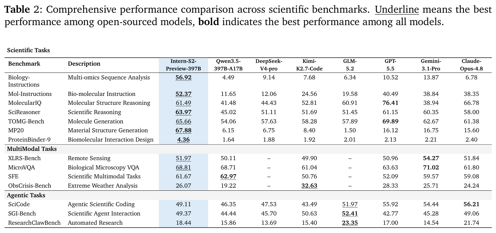
SkillsBench [46] 评估结构化的过程知识包能否提升语言模型 agent 在依赖专业知识的任务上的表现。其当前任务库包含八个领域的 87 项任务，每项配有精心整理的 Skills 与确定性验证器。基准使用带 Skills 和不带 Skills 的配对评估，将过程性指导的贡献与底层模型及 agent harness 分离。我们在 OpenClaw 2026.5.7 上评估 SkillsBench。
Terminal-Bench 2.1 [54, 74] 在隔离命令行环境中评估 agent 执行 89 项困难且现实的任务，涉及软件工程、机器学习、安全、数据科学及相关工作流。每项任务提供专用环境、人工编写参考解及用于结果验证的自动测试。版本 2.1 修订 Terminal-Bench 2.0 的 28 项任务，并引入持续验证，以提高任务正确性与基准可靠性。我们在 Terminus 2 上评估 Terminal-Bench 2.1，部分结果从 Artificial Analysis 收集。
SWE-Bench Pro [25] 评估编码 agent 执行面向企业的长程软件工程任务，这些任务可能需要专业人员工作数小时或数天。它包含来自 41 个活跃维护仓库的 1,865 个人工验证问题，划分为公开集、留出集和商业集，覆盖开源与专有代码库。Agent 必须实现实质性、往往涉及多文件的修改，满足任务专属测试且不使既有行为退化。我们在 Mini-SWE-Agent 上评估 SWE-Bench Pro，并修改官方评估镜像，避免 agent 从 git 日志中获取标准答案。
SWE-bench Multilingual [41, 93] 将 SWE-bench 风格的问题解决拓展至 Python 之外，包含来自 42 个仓库、九种编程语言的 300 项人工整理任务：C、C++、Go、Java、JavaScript、TypeScript、PHP、Ruby 和 Rust。每项任务提供真实 GitHub issue 及解决前的仓库快照，要求 agent 生成补丁，既通过用于目标修复的 fail-to-pass 测试，也通过用于既有功能的 pass-to-pass 测试。它保持与标准 SWE-bench 评估基础设施兼容，同时揭示软件工程性能的语言差异。我们在 Mini-SWE-Agent 上评估 SWE-Bench Multilingual。
WildClawBench [26] 是原生运行时基准，用于评估自主 AI agent 在真实 CLI harness 环境中执行复杂长程任务。它将人工编写的双语及多模态工作流与真实工具和环境结合，测试 agent 端到端工具编排与执行能力。
如表 2 和表 3 所示，Intern-S2-Preview-397B 在广泛科学基准上表现领先。它在 Biology-Instructions（56.92）、Mol-Instructions（52.37）和 SciReasoner（63.97）上优于强大的开源与闭源模型。模型还在
最后一句接续下一页。
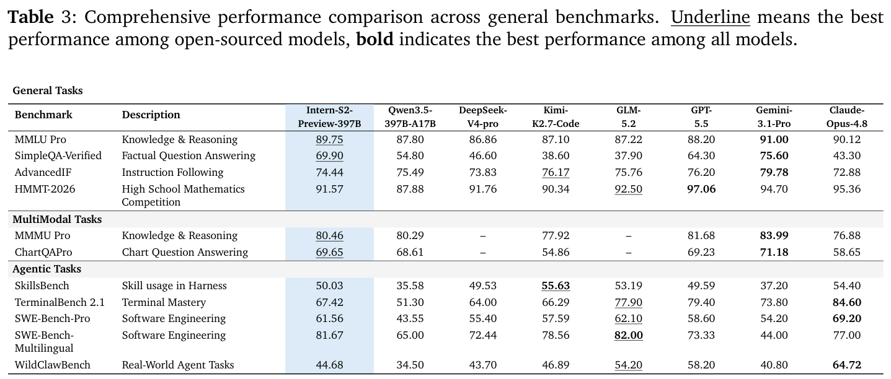
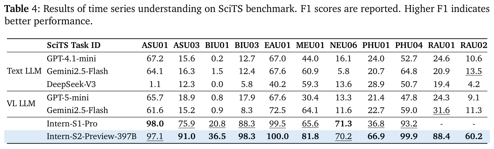
（接上页）内部 MP20 与 ProteinBinder-9 评估集上取得最先进（SOTA）结果。此外，它在 MolecularIQ（61.49）、TOMG-Bench（65.66）、XLRS-Bench（51.97）和 MicroVQA（68.81）上取得开源模型中的最佳表现。
在面向科学的 agent 任务上，Intern-S2-Preview-397B 总体优于 DeepSeek-V4-Pro 与 Qwen3.5-397B，仅次于 GLM-5.2。模型在通用基准上也表现强劲，在 MMLU-Pro（89.75）、SimpleQA-Verified（69.90）、MMMU-Pro（80.46）和 ChartQAPro（69.65）上取得开源模型中的最佳结果。在通用 agent 任务上，它持续优于 Qwen3.5-397B，表现与 Kimi-K2.7-Code 相当。
Memory Decoder。为评估 Memory Decoder 作为 Intern-S2-Preview-397B 的独立扩展，我们选取生物学作为代表性科学领域，实例化 Intern-MemDec-4B。我们在全部 21 项 Biology-Instructions 任务 [34] 上评估所得生物学记忆，并在 MMLU Pro、Mol-Instructions、MMMU Pro、MicroVQA、IMO-Answer-Bench 和 SFE 上考察跨领域行为，以 Intern-S1-Pro（1T）作为额外参考模型。如图 12 所示，相对于冻结的 Intern-S2-Preview-397B 骨干模型，记忆增强变体将 Biology-Instructions 平均得分从 56.92 提升至 60.32。跨领域能力画像用于检查生物学记忆是否改变目标领域以外的行为。在这些比较中，Intern-MemDec-4B 在通用知识、推理、科学及多模态基准上保持接近冻结骨干模型，同时改善目标生物学基准，表明 Memory Decoder 可作为 397B 骨干模型的可选扩展，提供有针对性的科学专门化能力。
时间序列理解。表 4 报告 Intern-S2-Preview-397B 在 SciTS 基准 [86] 时间序列理解任务上的性能。Intern-S2-Preview 持续优于通用
最后一句接续下一页。
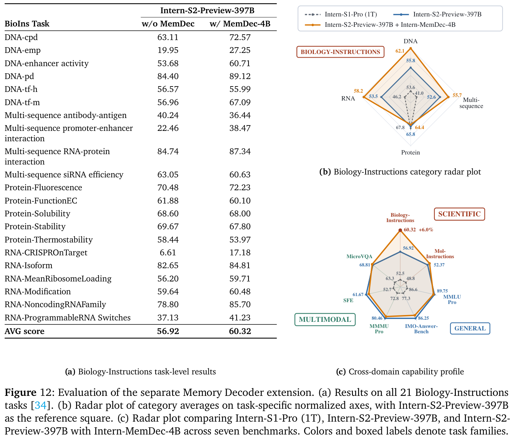
（接上页）文本 LLM 与视觉语言 LLM，凸显直接建模底层时间序列，而非仅依赖文本描述或可视化信号的重要性。更重要的是，Intern-S2-Preview-397B 使用不到万亿参数规模 Intern-S1-Pro 一半的参数，却取得相当甚至更好的性能，在两者均支持的九项任务中有七项优于后者。ASU03、BIU01、BIU03、MEU01 和 PHU01 上的提升尤为显著，PHU01 的 F1 分数从 36.8 提升至 66.9。升级时间序列模块还将模型扩展到 Intern-S1-Pro 不支持的雷达编码方案分类及模式与调制分类，在这两项任务上均明显优于基线模型。
时间序列生成。表 5 在 SciTS [86] 的预测任务上，将 Intern-S2-Preview 与通用文本 LLM、视觉语言 LLM 和专门时间序列预测模型比较。文本与视觉语言 LLM 常表现出较低成功率，因为长预测跨度可能超出其输出容量，而严格的序列长度与格式要求常导致指令遵循失败。此外，通过离散文本 token 生成预测可能损害数值精度，限制对细粒度科学信号的预测准确性。通过采用专用数值预测分支，Intern-S2-Preview-397B 保留数值保真度，并实现跨异构领域与预测跨度的可靠预测，优于专门时间序列基线，尤其在 ENG02、ENG03、MEG03、PHG02 和 URG05 上提升明显。预测跨度预测器准确率达到 99%，表明其能够根据预测指令可靠地推断所需预测长度。除 SciTS 的科学时间序列任务外，我们还在通用时间序列预测基准 GIFT-Eval [4] 上评估 Intern-S2-Preview-397B，取得具有竞争力的零样本 MASE 0.785。
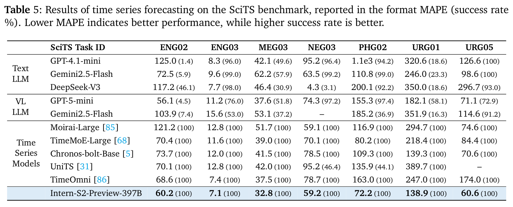
我们提出 Intern-S2-Preview-397B 这一科学 agent 基础模型，面向需要多模态理解、领域专属推理、科学生成、工具交互和迭代执行的科学研究。在科学、多模态、agent、通用及时间序列评估中，模型展现广泛能力覆盖，并支持架构、预训练和后训练中的主要设计选择。Agent 评估进一步表明，科学能力不仅应通过孤立基准答案的准确率衡量，还应通过模型能否将推理连接到可执行、可验证、可迭代的工作流来衡量。另外，Memory Decoder 研究表明，可以为冻结骨干模型增加有针对性的科学专门化能力，同时保留 Intern-S2-Preview-397B 作为通用模型的角色。Intern-S2-Preview 仍是预览系统；未来工作应提高更长科学工作流中的可靠性，扩展领域专属记忆和任务环境，强化验证器，并深化与专门科学工具的集成。
作者按姓氏字母顺序列出。
Lei Bai, Jiaqi Cao, Chiyu Chen, Guanzhou Chen, Kai Chen, Guangran Cheng, Erfei Cui, Xuanlang Dai, Shengyuan Ding, Shangheng Du, Yanhui Duan, Yue Fan, Youqing Fang, Quan Gan, Yuanyuan Gao, Jiaye Ge, Lixin Gu, Yuzhe Gu, Qipeng Guo, Junjun He, Xin Hong, Ming Hu, Zhouqi Hua, Haian Huang, Junhao Huang, Zixian Huang, Minxi Jin, Lingkai Kong, Alexander Lam, Zehao Li, Zonglin Li, Tianhao Liang, Dahua Lin, Junyao Lin, Tianyang Lin, Zhouhan Lin, Jiangning Liu, Jin Liu, Kuikun Liu, Wenran Liu, Yifei Liu, Yuhong Liu, Yuhong Liu, Zhoumianze Liu, Ziyan Liu, Ziyu Liu, Haijun Lv, Han Lv, Chengqi Lyu, Le Ma, Ningsheng Ma, Zerun Ma, Haoyang Peng, Runyu Peng, Jifei Shan, Zixin Shang, Kou Shi, Xiang Shi, Qisheng Su, Xuerui Su, Hao Sun, Xiao Sun, Yanan Sun, Yu Sun, Huanze Tang, Yinghao Tang, Wenhui Tian, Zhongbo Tian, Bingli Wang, Haomin Wang, Jiarui Wang, Jingzhi Wang, Rui Wang, Xiquan Wang, Yi Wang, Zhecan Wang, Ziyi Wang, Zun Wang, Rubin Wei, Lianyi Wu, Wen Wu, Yue Wu, Yuhan Wu, Zhenyu Wu, Zijian Wu, Shuhao Xing, Jun Xu, Xingle Xu, Xuenan Xu, Xiangchao Yan, Ziang Yan, Bowen Yang, Danni Yang, Lin Yang, Zhiqi Yang, Qian Yao, Haochen Ye, Peng Ye, Jinhui Yin, Jiashuo Yu, Dingbo Yuan, Fei Yuan, Yuhang Zang, Bo Zhang, Chao Zhang, Chen Zhang, Hongjie Zhang, Junming Zhang, Wenlong Zhang, Wenwei Zhang, Yiming Zhang, Zhuo Zhang, Ziyang Zhang, Haiteng Zhao, Penghao Zhao, Yibo Zhao, Zhonghan Zhao, Zhihang Zhong, Bowen Zhou, Peiheng Zhou, Xin Zhou, Xinyu Zhou, Yunhua Zhou, Dongsheng Zhu, Yicheng Zou
[1] 使用 AlphaFold 3 准确预测生物分子相互作用结构
Josh Abramson, Jonas Adler, Jack Dunger, Richard Evans, Tim Green, Alexander Pritzel, Olaf Ronneberger, Lindsay Willmore, Andrew J Ballard, Joshua Bambrick, 等 Accurate structure prediction of biomolecular interactions with alphafold 3. Nature, 630(8016):493–500, 2024. 5.1.1
[2] GPT-4 技术报告
Josh Achiam, Steven Adler, Sandhini Agarwal, Lama Ahmad, Ilge Akkaya, Florencia Leoni Aleman, Diogo Almeida, Janko Altenschmidt, Sam Altman, Shyamal Anadkat, 等 Gpt-4 technical report. arXiv 预印本 arXiv:2303.08774, 2023. 1 原文链接 1
[3] L1：用强化学习控制推理模型的思考时长
Pranjal Aggarwal and Sean Welleck. L1: Controlling how long a reasoning model thinks with reinforcement learning. arXiv 预印本 arXiv:2503.04697, 2025. 4.3.2 原文链接 1
[4] GIFT-Eval：通用时间序列预测模型评估基准
Taha Aksu, Gerald Woo, Juncheng Liu, Xu Liu, Chenghao Liu, Silvio Savarese, Caiming Xiong, and Doyen Sahoo. GIFT-Eval: A benchmark for general time series forecasting model evaluation. arXiv 预印本 arXiv:2410.10393, 2024. 5.3 原文链接 1
[5] Chronos：学习时间序列的语言
Abdul Fatir Ansari, Lorenzo Stella, Caner Turkmen, Xiyuan Zhang, Pedro Mercado, Huibin Shen, Oleksandr Shchur, Syama Sundar Rangapuram, Sebastian Pineda Arango, Shubham Kapoor, Jasper Zschiegner, Danielle C. Maddix, Hao Wang, Michael W. Mahoney, Kari Torkkola, Andrew Gordon Wilson, Michael Bohlke-Schneider, and Yuyang Wang. Chronos: Learning the language of time series. Transactions on Machine Learning Research, 2024. 5
[6] SWE-rebench V2：大规模语言无关的软件工程任务采集
Ibragim Badertdinov, Maksim Nekrashevich, Anton Shevtsov, and Alexander Golubev. SWE-rebench V2: Language-agnostic SWE task collection at scale. arXiv 预印本 arXiv:2602.23866, 2026. 1 原文链接 1
[7] ClawGym：构建高效 Claw agent 的可扩展框架
Fei Bai, Huatong Song, Shuang Sun, Daixuan Cheng, Yike Yang, Chuan Hao, Renyuan Li, Feng Chang, Yuan Wei, Ran Tao, 等 Clawgym: A scalable framework for building effective claw agents. arXiv 预印本 arXiv:2604.26904, 2026. 1 原文链接 1
[8] Intern-S1：科学多模态基础模型
Lei Bai, Zhongrui Cai, Yuhang Cao, Maosong Cao, Weihan Cao, Chiyu Chen, Haojiong Chen, Kai Chen, Pengcheng Chen, Ying Chen, 等 Intern-s1: A scientific multimodal foundation model. arXiv 预印本 arXiv:2508.15763, 2025. 1 原文链接 1
[9] MolecularIQ：通过分子图上的符号验证刻画化学推理能力
Christoph Bartmann, Johannes Schimunek, Mykyta Ielanskyi, Philipp Seidl, Günter Klambauer, and Sohvi Luukkonen. Moleculariq: Characterizing chemical reasoning capabilities through symbolic verification on molecular graphs, 2026. 5.1.1
[10] 用于多 agent 通信的自适应图剪枝
Li Boyi, Zhonghan Zhao, Der-Horng Lee, and Gaoang Wang. Adaptive graph pruning for multi-agent communication. CoRR, 2025. 4.4
[11] MicroVQA：面向显微成像科学研究的多模态推理基准
James Burgess, Jeffrey J Nirschl, Laura Bravo-Sánchez, Alejandro Lozano, Sanket Rajan Gupte, Jesus G. Galaz-Montoya, Yuhui Zhang, Yuchang Su, Disha Bhowmik, Zachary Coman, Sarina M. Hasan, Alexandra Johannesson, William D. Leineweber, Malvika G Nair, Ridhi Yarlagadda, Connor Zuraski, Wah Chiu, Sarah Cohen, Jan N. Hansen, Manuel D Leonetti, Chad Liu, Emma Lundberg, and Serena Yeung-Levy. Microvqa: A multimodal reasoning benchmark for microscopy-based scientific research, 2025. 1, 5.1.1
[12] Memory Decoder：用于 LLM 的预训练即插即用记忆
Jiaqi Cao, Jiarui Wang, Rubin Wei, Qipeng Guo, Kai Chen, Bowen Zhou, and Zhouhan Lin. Memory decoder: A pretrained, plug-and-play memory for large language models. In Advances in Neural Information Processing Systems, volume 38, pages 115487–115510, 2025. 2.1
[13] SRT：通过带树结构缓存的推测 Rollout 加速强化学习
Chi-Chih Chang, Siqi Zhu, Zhichen Zeng, Haibin Lin, Jiaxuan You, Mohamed S Abdelfattah, Ziheng Jiang, and Xuehai Qian. Srt: Accelerating reinforcement learning via speculative rollout with tree-structured cache. arXiv 预印本 arXiv:2601.09083, 2026. 4.3.3 原文链接 1
[14] 通过推测采样加速LLMdecoding
Charlie Chen, Sebastian Borgeaud, Geoffrey Irving, Jean-Baptiste Lespiau, Laurent Sifre, and John Jumper. Accelerating large language model decoding with speculative sampling. arXiv 预印本 arXiv:2302.01318, 2023. 4.3.3 原文链接 1
[15] Respec：面向强化学习系统的 speculative decoding 优化
Qiaoling Chen, Zijun Liu, Peng Sun, Shenggui Li, Guoteng Wang, Ziming Liu, Yonggang Wen, Siyuan Feng, and Tianwei Zhang. Respec: Towards optimizing speculative decoding in reinforcement learning systems. arXiv 预印本 arXiv:2510.26475, 2025. 4.3.3 原文链接 1
[16] 对于 2+3=? 不要想那么多：论类 o1 LLM 的过度思考
Xingyu Chen, Jiahao Xu, Tian Liang, Zhiwei He, Jianhui Pang, Dian Yu, Linfeng Song, Qiuzhi Liu, Mengfei Zhou, Zhuosheng Zhang, 等 Do not think that much for 2+ 3=? on the overthinking of o1-like llms. arXiv 预印本 arXiv:2412.21187, 2024. 4.3.2 原文链接 1
[17] T-Eval：逐步评估 LLM 的工具使用能力
Zehui Chen, Weihua Du, Wenwei Zhang, Kuikun Liu, Jiangning Liu, Miao Zheng, Jingming Zhuo, Songyang Zhang, Dahua Lin, Kai Chen, and Feng Zhao. T-eval: Evaluating the tool utilization capability of large language models step by step. In Proceedings of the 62nd Annual Meeting of the Association for Computational Linguistics (Volume 1: Long Papers), pages 9510–9529. Association for Computational Linguistics, 2024. 4.4
[18] MindSearch：模拟人类思维以激发深度 AI 搜索器
Zehui Chen, Kuikun Liu, Qiuchen Wang, Jiangning Liu, Wenwei Zhang, Kai Chen, and Feng Zhao. Mindsearch: Mimicking human minds elicits deep AI searcher. arXiv 预印本 arXiv:2407.20183, 2024. 原文链接 1
[19] Agent-FLAN：为 LLM 的有效 agent 调优设计数据与方法
Zehui Chen, Kuikun Liu, Qiuchen Wang, Wenwei Zhang, Jiangning Liu, Dahua Lin, Kai Chen, and Feng Zhao. Agent-FLAN: Designing data and methods of effective agent tuning for large language models. In Findings of the Association for Computational Linguistics: ACL 2024, pages 9354–9366. Association for Computational Linguistics, 2024. 4.4
[20] 伴随探索的推理：熵的视角
Daixuan Cheng, Shaohan Huang, Xuekai Zhu, Bo Dai, Xin Zhao, Zhenliang Zhang, and Furu Wei. Reasoning with exploration: An entropy perspective. In Proceedings of the AAAI Conference on Artificial Intelligence, volume 40, pages 30377–30385, 2026. 4.3.4
[21] 组熵控制策略优化
Guangran Cheng, Chengqi Lyu, Songyang Gao, Wenwei Zhang, and Kai Chen. Group entropy-controlled policy optimization, 2026. 1, 4.3.4
[22] 推理语言模型强化学习的熵机制
Ganqu Cui, Yuchen Zhang, Jiacheng Chen, Lifan Yuan, Zhi Wang, Yuxin Zuo, Haozhan Li, Yuchen Fan, Huayu Chen, Weize Chen, 等 The entropy mechanism of reinforcement learning for reasoning language models. arXiv 预印本 arXiv:2505.22617, 2025. 4.3.4 原文链接 1
[23] DeepSeek-V4：迈向高效的百万 token 上下文智能
DeepSeek-AI. DeepSeek-V4: Towards highly efficient million-token context intelligence. arXiv 预印本 arXiv:2606.19348, 2026. 4.5 原文链接 1
[24] 超越基准：MathArena 作为 LLM 数学评估平台
Jasper Dekoninck, Nikola Jovanović, Tim Gehrunger, Kári Rögnvaldsson, Ivo Petrov, Chenhao Sun, and Martin Vechev. Beyond benchmarks: MathArena as an evaluation platform for mathematics with LLMs, 2026. 5.1.2
[25] SWE-Bench Pro：AI agent 能否解决长程软件工程任务？
Xiang Deng, Jeff Da, Edwin Pan, Yannis Yiming He, Charles Ide, Kanak Garg, Niklas Lauffer, Andrew Park, Nitin Pasari, Chetan Rane, Karmini Sampath, Maya Krishnan, Srivatsa Kundurthy, Sean Hendryx, Zifan Wang, Vijay Bharadwaj, Jeff Holm, Raja Aluri, Chen Bo Calvin Zhang, Noah Jacobson, Bing Liu, and Brad Kenstler. SWE-Bench Pro: Can AI agents solve long-horizon software engineering tasks??, 2025. 5.1.2
[26] WildClawBench：现实世界长程 agent 评估基准
Shuangrui Ding, Xuanlang Dai, Long Xing, Shengyuan Ding, Ziyu Liu, Yang JingYi, Penghui Yang, Zhixiong Zhang, Xilin Wei, Xinyu Fang, 等 WildClawBench: A benchmark for real-world, long-horizon agent evaluation. arXiv 预印本 arXiv:2605.10912, 2026. 5.1.2 原文链接 1
[27] Mol-Instructions：面向 LLM 的大规模生物分子指令数据集
Yin Fang, Xiaozhuan Liang, Ningyu Zhang, Kangwei Liu, Rui Huang, Zhuo Chen, Xiaohui Fan, and Huajun Chen. Mol-instructions: A large-scale biomolecular instruction dataset for large language models, 2024. 5.1.1
[28] MindCompletion：通过过程续接学习实现交互式写作的行为对齐
Youqing Fang, Yinhao Tang, Yanan Sun, Jiangning Liu, Ziyi Wang, Xun Zhao, Bin Liu, Weiming Zhang, Kuikun Liu, Wenwei Zhang, and Kai Chen. Mindcompletion: Behavioral alignment for interactive writing via process-continuation learning, 2026. 手稿。 4.4
[29] MindCopilot：迈向细粒度人类—LLM 共同写作的形式化与评估
Youqing Fang, Yinhao Tang, Yanan Sun, Jiangning Liu, Ziyi Wang, Xun Zhao, Bin Liu, Weiming Zhang, Kuikun Liu, Wenwei Zhang, 等 Mindcopilot: Towards formalizing and evaluating granular human-llm co-writing. arXiv 预印本 arXiv:2605.23535, 2026. 4.4 原文链接 1
[30] AReaL：用于语言推理的大规模异步强化学习系统
Wei Fu, Jiaxuan Gao, Xujie Shen, Chen Zhu, Zhiyu Mei, Chuyi He, Shusheng Xu, Guo Wei, Jun Mei, Jiashu Wang, Tongkai Yang, Binhang Yuan, and Yi Wu. AReaL: A large-scale asynchronous reinforcement learning system for language reasoning. arXiv 预印本 arXiv:2505.24298, 2025. 4.3.1 原文链接 1
[31] UniTS：统一多任务时间序列模型
Shanghua Gao, Teddy Koker, Owen Queen, Thomas Hartvigsen, Theodoros Tsiligkaridis, and Marinka Zitnik. UniTS: A unified multi-task time series model. In Advances in Neural Information Processing Systems, volume 37, 2024. 5
[32] Intern-S1-MO：用于奥林匹克竞赛级数学问题求解的长程推理 agent
Yuzhe Gu, Songyang Gao, Zijian Wu, Lingkai Kong, Wenwei Zhang, Zhongrui Cai, Fan Zheng, Tianyou Ma, Junhao Shen, Haiteng Zhao, Duanyang Zhang, Huilun Zhang, Kuikun Liu, Chengqi Lyu, Yanhui Duan, Chiyu Chen, Ningsheng Ma, Jianfei Gao, Han Lyu, Dahua Lin, and Kai Chen. Intern-S1-MO: Long-horizon reasoning agent for olympiad-level mathematical problem solving. arXiv 预印本 arXiv:2512.10739, 2025. 4.4 原文链接 1
[33] SimpleQA Verified：衡量参数化知识的可靠事实性基准
Lukas Haas, Gal Yona, Giovanni D’Antonio, Sasha Goldshtein, and Dipanjan Das. SimpleQA Verified: A reliable factuality benchmark to measure parametric knowledge, 2025. 5.1.2
[34] Biology-Instructions：评估 LLM 多组学序列理解能力的数据集与基准
Haonan He, Yuchen Ren, Yining Tang, Ziyang Xu, Junxian Li, Minghao Yang, Di Zhang, Yuan Dong, Tao Chen, Shufei Zhang, Yuqiang Li, Nanqing Dong, Wanli Ouyang, Dongzhan Zhou, and Peng Ye. Biology-instructions: A dataset and benchmark for multi-omics sequence understanding capability of large language models. In Christos Christodoulopoulos, Tanmoy Chakraborty, Carolyn Rose, and Violet Peng, editors, Findings of the Association for Computational Linguistics: EMNLP 2025, pages 17984–18016, Suzhou, China, November 2025. Association for Computational Linguistics. 5.1.1, 5.3, 12
[35] AdvancedIF：通过基于评分准则的基准评估与强化学习提升 LLM 指令遵循
Yun He, Wenzhe Li, Hejia Zhang, Songlin Li, Karishma Mandyam, Sopan Khosla, Yuanhao Xiong, Nanshu Wang, Xiaoliang Peng, Beibin Li, Shengjie Bi, Shishir G. Patil, Qi Qi, Shengyu Feng, Julian Katz-Samuels, Richard Yuanzhe Pang, Sujan Gonugondla, Hunter Lang, Yue Yu, Yundi Qian, Maryam Fazel-Zarandi, Licheng Yu, Amine Benhalloum, Hany Awadalla, and Manaal Faruqui. AdvancedIF: Rubric-based benchmarking and reinforcement learning for advancing LLM instruction following, 2025. 5.1.2
[36] 科学 LLM 综述：从数据基础到 agent 前沿
Ming Hu, Chenglong Ma, Wei Li, Wanghan Xu, Jiamin Wu, Jucheng Hu, Tianbin Li, Guohang Zhuang, Jiaqi Liu, Yingzhou Lu, 等 A survey of scientific large language models: From data foundations to agent frontiers. arXiv 预印本 arXiv:2508.21148, 2025. 1 原文链接 1
[37] 通过系统集成的 speculative decoding 加速 RL 后训练 Rollout
Hayate Iso, Tiyasa Mitra, Sudipta Mondal, Rasoul Shafipour, Venmugil Elango, Terry Kong, Yuki Huang, Seonjin Na, Izzy Putterman, Benjamin Chislett, 等 Accelerating rl post-training rollouts via system-integrated speculative decoding. arXiv 预印本 arXiv:2604.26779, 2026. 4.3.3 原文链接 1
[38] R2E-Gym：用于扩展开权重软件工程 agent 的程序化环境与混合验证器
Naman Jain, Jaskirat Singh, Manish Shetty, Liang Zheng, Koushik Sen, and Ion Stoica. R2E-gym: Procedural environments and hybrid verifiers for scaling open-weights SWE agents. arXiv 预印本 arXiv:2504.07164, 2025. 1 原文链接 1
[39] Muon：神经网络隐藏层优化器
Keller Jordan, Yuchen Jin, Vlado Boza, Jiacheng You, Franz Cesista, Laker Newhouse, and Jeremy Bernstein. Muon: An optimizer for hidden layers in neural networks, 2024. 4.3.5
[40] 通过记忆实现泛化：最近邻语言模型
Urvashi Khandelwal, Omer Levy, Dan Jurafsky, Luke Zettlemoyer, and Mike Lewis. Generalization through memorization: Nearest neighbor language models. arXiv 预印本 arXiv:1911.00172, 2019. 2.1 原文链接 1
[41] SWE-bench Multilingual（多语言版）
Kabir Khandpur, Kilian Lieret, Carlos E. Jimenez, Ofir Press, and John Yang. SWE-bench Multilingual. SWE-bench benchmark release, May 2025. 5.1.2
[42] Lagent：构建基于 LLM 的 agent 的轻量开源框架
Lagent Developer Team. Lagent: A lightweight open-source framework for building large language model based agents. https://github.com/InternLM/lagent, 2023. 软件。 4.4 原文链接 1
[43] 通过 speculative decoding 实现 Transformer 快速推理
Yaniv Leviathan, Matan Kalman, and Yossi Matias. Fast inference from transformers via speculative decoding. In Proceedings of the 40th International Conference on Machine Learning, 2023. 4.3.3
[44] Ling and Ring 2.6 技术报告：万亿参数规模下高效、即时的 agent 智能
Ang Li 等 Ling and ring 2.6 technical report: Efficient and instant agentic intelligence at trillion-parameter scale. arXiv 预印本 arXiv:2606.15079, 2026. 4.3.1 原文链接 1
[45] TOMG-Bench：评估 LLM 基于文本的开放式分子生成
Jiatong Li, Junxian Li, Yunqing Liu, Dongzhan Zhou, and Qing Li. TOMG-Bench: Evaluating LLMs on text-based open molecule generation, 2024. 5.1.1
[46] SkillsBench：评估 agent 技能在多样化任务中的效果
Xiangyi Li 等 SkillsBench: Benchmarking how well agent skills work across diverse tasks, 2026. 5.1.2
[47] 让我们逐步验证
Hunter Lightman, Vineet Kosaraju, Yuri Burda, Harrison Edwards, Bowen Baker, Teddy Lee, Jan Leike, John Schulman, Ilya Sutskever, and Karl Cobbe. Let’s verify step by step. In ICLR. OpenReview.net, 2024. 4.4.3
[48] Muon 可扩展用于 LLM 训练
Jingyuan Liu, Jianlin Su, Xingcheng Yao, Zhejun Jiang, Guokun Lai, Yulun Du, Yidao Qin, Weixin Xu, Enzhe Lu, Junjie Yan, 等 Muon is scalable for llm training. arXiv 预印本 arXiv:2502.16982, 2025. 4.3.5 原文链接 1
[49] O1-Pruner：用于类 o1 推理剪枝的长度协调微调
Haotian Luo, Li Shen, Haiying He, Yibo Wang, Shiwei Liu, Wei Li, Naiqiang Tan, Xiaochun Cao, and Dacheng Tao. O1-pruner: Length-harmonizing fine-tuning for o1-like reasoning pruning, 2025. URL https://arxiv. org/abs/2501.12570, 2025. 4.3.2
[50] Agent Lightning：使用强化学习训练任意 AI agent
Xufang Luo, Yuge Zhang, Zhiyuan He, Zilong Wang, Siyun Zhao, Dongsheng Li, Luna K. Qiu, and Yuqing Yang. Agent lightning: Train any AI agents with reinforcement learning. arXiv 预印本 arXiv:2508.03680, 2025. 4.4 原文链接 1
[51] MOPD：用于 LLM 后训练能力整合的 MOPD
Wenhan Ma, Jianyu Wei, Liang Zhao, Hailin Zhang, Bangjun Xiao, Lei Li, Qibin Yang, Bofei Gao, Yudong Wang, Rang Li, Jinhao Dong, Zhifang Sui, and Fuli Luo. MOPD: Multi-teacher on-policy distillation for capability integration in LLM post-training. arXiv 预印本 arXiv:2606.30406, 2026. 4.5, 4.5 原文链接 1
[52] 通过对齐训练与推理路由器稳定 MoE 强化学习
Wenhan Ma, Hailin Zhang, Liang Zhao, Yifan Song, Yudong Wang, Zhifang Sui, and Fuli Luo. Stabilizing MoE reinforcement learning by aligning training and inference routers. arXiv 预印本 arXiv:2510.11370, 2025. 4.3.1 原文链接 1
[53] ChartQAPro：更丰富且更具挑战性的图表问答基准
Ahmed Masry, Mohammed Saidul Islam, Mahir Ahmed, Aayush Bajaj, Firoz Kabir, Aaryaman Kartha, Md Tahmid Rahman Laskar, Mizanur Rahman, Shadikur Rahman, Mehrad Shahmohammadi, Megh Thakkar, Md Rizwan Parvez, Enamul Hoque, and Shafiq Joty. ChartQAPro: A more diverse and challenging benchmark for chart question answering. In Findings of the Association for Computational Linguistics: ACL 2025, pages 19123–19151, Vienna, Austria, July 2025. Association for Computational Linguistics. 5.1.2
[54] Terminal-Bench：在命令行界面中的困难现实任务上评估 agent
Mike A. Merrill 等 Terminal-Bench: Benchmarking agents on hard, realistic tasks in command line interfaces, 2026. 5.1.2
[55] MiniMax-M1：通过 Lightning Attention 高效扩展测试时计算
MiniMax, :, Aili Chen, Aonian Li, Bangwei Gong, Binyang Jiang, Bo Fei, Bo Yang, Boji Shan, Changqing Yu, Chao Wang, Cheng Zhu, Chengjun Xiao, Chengyu Du, Chi Zhang, Chu Qiao, Chunhao Zhang, Chunhui Du, Congchao Guo, Da Chen, Deming Ding, Dianjun Sun, Dong Li, Enwei Jiao, Haigang Zhou, Haimo Zhang, Han Ding, Haohai Sun, Haoyu Feng, Huaiguang Cai, Haichao Zhu, Jian Sun, Jiaqi Zhuang, Jiaren Cai, Jiayuan Song, Jin Zhu, Jingyang Li, Jinhao Tian, Jinli Liu, Junhao Xu, Junjie Yan, Junteng Liu, Junxian He, Kaiyi Feng, Ke Yang, Kecheng Xiao, Le Han, Leyang Wang, Lianfei Yu, Liheng Feng, Lin Li, Lin Zheng, Linge Du, Lingyu Yang, Lunbin Zeng, Minghui Yu, Mingliang Tao, Mingyuan Chi, Mozhi Zhang, Mujie Lin, Nan Hu, Nongyu Di, Peng Gao, Pengfei Li, Pengyu Zhao, Qibing Ren, Qidi Xu, Qile Li, Qin Wang, Rong Tian, Ruitao Leng, Shaoxiang Chen, Shaoyu Chen, Shengmin Shi, Shitong Weng, Shuchang Guan, Shuqi Yu, Sichen Li, Songquan Zhu, Tengfei Li, Tianchi Cai, Tianrun Liang, Weiyu Cheng, Weize Kong, Wenkai Li, Xiancai Chen, Xiangjun Song, Xiao Luo, Xiao Su, Xiaobo Li, Xiaodong Han, Xinzhu Hou, Xuan Lu, Xun Zou, Xuyang Shen, Yan Gong, Yan Ma, Yang Wang, Yiqi Shi, Yiran Zhong, Yonghong Duan, Yongxiang Fu, Yongyi Hu, Yu Gao, Yuanxiang Fan, Yufeng Yang, Yuhao Li, Yulin Hu, Yunan Huang, Yunji Li, Yunzhi Xu, Yuxin Mao, Yuxuan Shi, Yuze Wenren, Zehan Li, Zelin Li, Zhanxu Tian, Zhengmao Zhu, Zhenhua Fan, Zhenzhen Wu, Zhichao Xu, Zhihang Yu, Zhiheng Lyu, Zhuo Jiang, Zibo Gao, Zijia Wu, Zijian Song, and Zijun Sun. Minimax-m1: Scaling test-time compute efficiently with lightning attention. arXiv 预印本 arXiv:2506.13585, 2025. 4.3.1 原文链接 1
[56] Nemotron 3 Ultra：用于 agent 推理的开放高效 MoE 混合 Mamba–Transformer 模型
NVIDIA. Nemotron 3 Ultra: Open, efficient mixture-of-experts hybrid mamba-transformer model for agentic reasoning. 技术报告， NVIDIA, June 2026. 4.5
[57] ObsCrisis-Bench：极端天气事件分析多模态基准
ObsCrisis Team. ObsCrisis-Bench: A multimodal benchmark for extreme weather event analysis, 2025. 5.1.1
[58] OpenAI GPT-5 系统卡
OpenAI. OpenAI GPT-5 System Card. arXiv 预印本 arXiv:2601.03267, 2026. 1 原文链接 1
[59] 使用 SWE-Gym 训练软件工程 agent 与验证器
Jiayi Pan, Xingyao Wang, Graham Neubig, Navdeep Jaitly, Heng Ji, Alane Suhr, and Yizhe Zhang. Training software engineering agents and verifiers with SWE-gym. arXiv 预印本 arXiv:2412.21139, 2024. 1 原文链接 1
[60] 论扩展 LLM 终端能力的数据工程
Renjie Pi, Grace Lam, Mohammad Shoeybi, Pooya Jannaty, Bryan Catanzaro, and Wei Ping. On data engineering for scaling LLM terminal capabilities. arXiv 预印本 arXiv:2602.21193, 2026. 1 原文链接 1
[61] ThoughtTerminator：评估、校准和缓解推理模型的过度思考
Xiao Pu, Michael Saxon, Wenyue Hua, and William Yang Wang. Thoughtterminator: Benchmarking, calibrating, and mitigating overthinking in reasoning models. arXiv 预印本 arXiv:2504.13367, 2025. 4.3.2 原文链接 1
[62] CoPRIS：通过并发控制、带重要性采样的部分 Rollout 实现高效稳定强化学习
Zekai Qu, Yinxu Pan, Ao Sun, Chaojun Xiao, and Xu Han. CoPRIS: Efficient and stable reinforcement learning via concurrency-controlled partial rollout with importance sampling. arXiv 预印本 arXiv:2511.05589, 2025. 4.3.1 原文链接 1
[63] LK 损失：speculative decoding 的直接接受率优化
Alexander Samarin, Sergei Krutikov, Anton Shevtsov, Sergei Skvortsov, Filipp Fisin, and Alexander Golubev. Lk losses: Direct acceptance rate optimization for speculative decoding. arXiv 预印本 arXiv:2602.23881, 2026. 4.3.3 原文链接 1
[64] Toolformer：语言模型可以自学工具使用
Timo Schick, Jane Dwivedi-Yu, Roberto Dessì, Roberta Raileanu, Maria Lomeli, Luke Zettlemoyer, Nicola Cancedda, and Thomas Scialom. Toolformer: Language models can teach themselves to use tools, 2023. 3.2
[65] DeepSeekMath：拓展开放语言模型的数学推理极限
Zhihong Shao, Peiyi Wang, Qihao Zhu, Runxin Xu, Junxiao Song, Mingchuan Zhang, Y. K. Li, Y. Wu, and Daya Guo. Deepseekmath: Pushing the limits of mathematical reasoning in open language models. CoRR, abs/2402.03300, 2024. 4.4.3
[66] QwenLong-L1.5：长上下文推理与记忆管理的后训练方案
Weizhou Shen, Ziyi Yang, Chenliang Li, Zhiyuan Lu, Miao Peng, Huashan Sun, Yingcheng Shi, Shengyi Liao, Shaopeng Lai, Bo Zhang, 等 Qwenlong-l1. 5: Post-training recipe for long-context reasoning and memory management. arXiv 预印本 arXiv:2512.12967, 2025. 4.3.4 原文链接 1
[67] HybridFlow：灵活高效的 RLHF 框架
Guangming Sheng, Chi Zhang, Zilingfeng Ye, Xibin Wu, Wang Zhang, Ru Zhang, Yanghua Peng, Haibin Lin, and Chuan Wu. HybridFlow: A flexible and efficient RLHF framework. In Proceedings of the Twentieth European Conference on Computer Systems, 2025. 4.3.1
[68] Time-MoE：基于 MoE 的十亿级时间序列基础模型
Xiaoming Shi, Shiyu Wang, Yuqi Nie, Dianqi Li, Zhou Ye, Qingsong Wen, and Ming Jin. Time-MoE: Billion-scale time series foundation models with mixture of experts. In International Conference on Learning Representations, 2025. 5
[69] 下一块推理 RL 真的优于 SFT 吗？重新审视无 CoT 数据下的训练策略
Yinhao Tang, Youqing Fang, Yanan Sun, Jiangning Liu, Ziyi Wang, Xun Zhao, Weiming Zhang, Bin Liu, Kuikun Liu, Wenwei Zhang, and Kai Chen. Is next-chunk reasoning RL really better than SFT? revisiting training strategies under no-CoT data, 2026. 手稿。 4.4
[70] SciExplore：从科学导航到信息整合评估自主 agent
Yinhao Tang, Youqing Fang, Yanan Sun, Wenran Liu, Weiming Zhang, Bin Liu, Kuikun Liu, Wenwei Zhang, and Kai Chen. Sciexplore: Evaluating autonomous agents from scientific navigation to information integration. In Findings of the Association for Computational Linguistics: ACL 2026, pages 22249–22273. Association for Computational Linguistics, 2026. 1, 4.4
[71] Skill2Task：通过技能图与渐进验证实现自演化 agent 任务合成
Yinhao Tang, Yanan Sun, Youqing Fang, Bin Liu, Kuikun Liu, Wenwei Zhang, and Kai Chen. Skill2task: Self-evolving agentic task synthesis via skills graph and progressive validation, 2026. 手稿。 1, 4.4
[72] Galactica：面向科学的 LLM
Ross Taylor, Marcin Kardas, Guillem Cucurull, Thomas Scialom, Anthony Hartshorn, Elvis Saravia, Andrew Poulton, Viktor Kerkez, and Robert Stojnic. Galactica: A large language model for science. arXiv 预印本 arXiv:2211.09085, 2022. 1 原文链接 1
[73] Kimi k1.5：扩展 LLM 强化学习
Kimi Team, Angang Du, Bofei Gao, Bowei Xing, Changjiu Jiang, Cheng Chen, Cheng Li, Chenjun Xiao, Chenzhuang Du, Chonghua Liao, 等 Kimi k1. 5: Scaling reinforcement learning with llms. arXiv 预印本 arXiv:2501.12599, 2025. 4.3.2 原文链接 1
[74] Terminal-Bench 2.1：Terminal-Bench 2.0 的修订版
Terminal-Bench Team. Terminal-Bench 2.1: A revision of terminal-bench 2.0. Terminal-Bench release note, May 2026. 5.1.2
[75] SciCode：科学家整理的研究编码基准
Minyang Tian, Luyu Gao, Shizhuo Dylan Zhang, Xinan Chen, Cunwei Fan, Xuefei Guo, Roland Haas, Pan Ji, Kittithat Krongchon, Yao Li, Shengyan Liu, Di Luo, Yutao Ma, Hao Tong, Kha Trinh, Chenyu Tian, Zihan Wang, Bohao Wu, Yanyu Xiong, Shengzhu Yin, Minhui Zhu, Kilian Lieret, Yanxin Lu, Genglin Liu, Yufeng Du, Tianhua Tao, Ofir Press, Jamie Callan, Eliu Huerta, and Hao Peng. SciCode: A research coding benchmark curated by scientists, 2024. 5.1.1
[76] MinerU2.5-Pro：拓展大规模数据中心文档解析的极限
Bin Wang, Tianyao He, Linke Ouyang, Fan Wu, Zhiyuan Zhao, Tao Chu, Yuan Qu, Zhenjiang Jin, Weijun Zeng, Ziyang Miao, Bangrui Xu, Junbo Niu, Mengzhang Cai, Jiantao Qiu, Qintong Zhang, Dongsheng Ma, Yuefeng Sun, Hejun Dong, Wenzheng Zhang, Jutao Xiao, Jiayong Shi, Pengyu Liao, Xiaomeng Zhao, Huaping Zhong, Liqun Wei, Jing Yu, Jie Yang, Wei Li, Shasha Wang, Qianqian Wu, Xuanhe Zhou, Weijia Li, Zhenxiang Li, Zhongying Tu, Jiang Wu, Lijun Wu, Chao Xu, Kai Chen, Wentao Zhang, Yu Qiao, Bowen Zhou, Dahua Lin, and Conghui He. Mineru2.5-pro: Pushing the limits of data-centric document parsing at scale, 2026. 3.2
[77] XLRS-Bench：你的多模态 LLM 能理解极大、超高分辨率遥感图像吗？
Fengxiang Wang, Hongzhen Wang, Zonghao Guo, Di Wang, Yulin Wang, Mingshuo Chen, Qiang Ma, Long Lan, Wenjing Yang, Jing Zhang, Zhiyuan Liu, and Maosong Sun. Xlrs-bench: Could your multimodal llms understand extremely large ultra-high-resolution remote sensing imagery?? In Proceedings of the IEEE/CVF Conference on Computer Vision and Pattern Recognition (CVPR), pages 14325–14336, June 2025. 1, 5.1.1
[78] MemSFT：通过外部参数化记忆缓解对齐税
Jiarui Wang, Xiang Shi, Jiaqi Cao, Rubin Wei, Xiquan Wang, Hao Sun, Jingzhi Wang, Zhiqi Yang, Qipeng Guo, Bowen Zhou, 等 Memsft: Mitigating alignment tax with an external parametric memory. arXiv 预印本 arXiv:2607.25614, 2026. 1, 2.1 原文链接 1
[79] OpenHands：面向作为通用 agent 的 AI 软件开发者的开放平台
Xingyao Wang, Boxuan Li, Yufan Song, Frank F. Xu, Xiangru Tang, Mingchen Zhuge, Jiayi Pan, Yueqi Song, Bowen Li, Jaskirat Singh, 等 Openhands: An open platform for AI software developers as generalist agents. In The Thirteenth International Conference on Learning Representations, 2025. 4.4.1
[80] SciReasoner：奠定跨学科科学推理基础
Yizhou Wang, Chen Tang, Han Deng, Jiabei Xiao, Jiaqi Liu, Jianyu Wu, Jun Yao, Pengze Li, Encheng Su, Lintao Wang, Guohang Zhuang, Yuchen Ren, Ben Fei, Ming Hu, Xin Chen, Dongzhan Zhou, Junjun He, Xiangyu Yue, Zhenfei Yin, Jiamin Wu, Qihao Zheng, Yuhao Zhou, Huihui Xu, Chenglong Ma, Yan Lu, Wenlong Zhang, Chunfeng Song, Philip Torr, Shixiang Tang, Xinzhu Ma, Wanli Ouyang, and Lei Bai. Scireasoner: Laying the scientific reasoning ground across disciplines, 2025. 1, 5.1.1
[81] MMLU-Pro：更稳健、更具挑战性的多任务语言理解基准
Yubo Wang, Xueguang Ma, Ge Zhang, Yuansheng Ni, Abhranil Chandra, Shiguang Guo, Weiming Ren, Aaran Arulraj, Xuan He, Ziyan Jiang, Tianle Li, Max Ku, Kai Wang, Alex Zhuang, Rongqi Fan, Xiang Yue, and Wenhu Chen. Mmlu-pro: A more robust and challenging multi-task language understanding benchmark, 2024. 5.1.2
[82] 使用 RFdiffusion 从头设计蛋白质结构与功能
Joseph L Watson, David Juergens, Nathaniel R Bennett, Brian L Trippe, Jason Yim, Helen E Eisenach, Woody Ahern, Andrew J Borst, Robert J Ragotte, Lukas F Milles, 等 De novo design of protein structure and function with rfdiffusion. Nature, 620(7976):1089–1100, 2023. 5.1.1
[83] MLP Memory：用于 LLM 的检索器预训练记忆
Rubin Wei, Jiaqi Cao, Jiarui Wang, Jushi Kai, Qipeng Guo, Bowen Zhou, and Zhouhan Lin. MLP Memory: A retriever-pretrained memory for large language models. In International Conference on Learning Representations, 2026. 2.1
[84] 大规模 Memory Decoder：预训练参数化长期记忆
Rubin Wei, Jiaqi Cao, Jiarui Wang, Junming Zhang, Qipeng Guo, Bowen Zhou, and Zhouhan Lin. Memory decoder at scale: A pretrained, parametric long-term memory. arXiv 预印本 arXiv:2607.27919, 2026. 1, 2.1 原文链接 1
[85] 通用时间序列预测 Transformer 的统一训练
Gerald Woo, Chenghao Liu, Akshat Kumar, Caiming Xiong, Silvio Savarese, and Doyen Sahoo. Unified training of universal time series forecasting transformers. In Proceedings of the 41st International Conference on Machine Learning, volume 235 of Proceedings of Machine Learning Research, pages 53140– 53164. PMLR, 2024. 5
[86] SciTS：使用 LLM 理解与生成科学时间序列
Wen Wu, Ziyang Zhang, Liwei Liu, Xuenan Xu, Junlin Liu, Ke Fan, Qitan Lv, Jimin Zhuang, Chen Zhang, Zheqi Yuan, 等 SciTS: Scientific time series understanding and generation with llms. In Proc. ICLR, Rio de Janeiro, 2026. 1, 5.3, 5.3, 5
[87] 恰到好处的思考：通过自适应长度惩罚强化学习实现高效推理
Violet Xiang, Chase Blagden, Rafael Rafailov, Nathan Lile, Sang Truong, Chelsea Finn, and Nick Haber. Just enough thinking: Efficient reasoning with adaptive length penalties reinforcement learning. arXiv 预印本 arXiv:2506.05256, 2025. 4.3.2 原文链接 1
[88] CapRL：通过强化学习激发密集图像描述能力
Long Xing, Xiaoyi Dong, Yuhang Zang, Yuhang Cao, Jianze Liang, Qidong Huang, Jiaqi Wang, Feng Wu, and Dahua Lin. CapRL: Stimulating dense image caption capabilities via reinforcement learning. In ICLR, volume 2026, 2026. 3.3
[89] Polar：在任意 Harness 上进行大规模 agent RL
Binfeng Xu, Hao Zhang, Shaokun Zhang, Songyang Han, Mingjie Liu, Jian Hu, Shizhe Diao, Zhenghui Jin, Yunheng Zou, Michael Demoret, Jan Kautz, and Yi Dong. Polar: Agentic RL on any harness at scale. arXiv 预印本 arXiv:2605.24220, 2026. 4.4 原文链接 1
[90] 通过与科学家对齐的工作流探测 LLM 的科学通用智能
Wanghan Xu 等 Probing scientific general intelligence of LLMs with scientist-aligned workflows, 2025. 5.1.1
[91] ResearchClawBench：端到端自主科学研究基准
Wanghan Xu 等 ResearchClawBench: A benchmark for end-to-end autonomous scientific research, 2026. 5.1.1
[92] SWE-agent：agent—计算机接口实现自动化软件工程
John Yang, Carlos E. Jimenez, Alexander Wettig, Kilian Lieret, Shunyu Yao, Karthik Narasimhan, and Ofir Press. SWE-agent: Agent-computer interfaces enable automated software engineering. arXiv 预印本 arXiv:2405.15793, 2024. 4.4.1 原文链接 1
[93] SWE-smith：扩展软件工程 agent 数据规模
John Yang, Kilian Lieret, Carlos E. Jimenez, Alexander Wettig, Kabir Khandpur, Yanzhe Zhang, Binyuan Hui, Ofir Press, Ludwig Schmidt, and Diyi Yang. SWE-smith: Scaling data for software engineering agents. arXiv 预印本 arXiv:2504.21798, 2025. 1, 5.1.2 原文链接 1
[94] Entropic：通过比例—积分控制稳定熵，实现 LLM 的稳定长期训练
Kai Yang, Xin Xu, Yangkun Chen, Weijie Liu, Jiafei Lyu, Zichuan Lin, Deheng Ye, and Saiyong Yang. Entropic: Towards stable long-term training of llms via entropy stabilization with proportional-integral control. arXiv 预印本 arXiv:2511.15248, 2025. 4.3.4 原文链接 1
[95] Gated Delta Networks：使用 Delta Rule 改进 Mamba2
Songlin Yang, Jan Kautz, and Ali Hatamizadeh. Gated delta networks: Improving Mamba2 with delta rule. In International Conference on Learning Representations, 2025. 4.3.1
[96] DAPO：大规模开源 LLM 强化学习系统
Qiying Yu, Zheng Zhang, Ruofei Zhu, Yufeng Yuan, Xiaochen Zuo, Yu Yue, Tiantian Fan, Gaohong Liu, Lingjun Liu, Xin Liu, Haibin Lin, Zhiqi Lin, Bole Ma, Guangming Sheng, Yuxuan Tong, Chi Zhang, Mofan Zhang, Wang Zhang, Hang Zhu, Jinhua Zhu, Jiaze Chen, Jiangjie Chen, Chengyi Wang, Hongli Yu, Weinan Dai, Yuxuan Song, Xiangpeng Wei, Hao Zhou, Jingjing Liu, Wei-Ying Ma, Ya-Qin Zhang, Lin Yan, Mu Qiao, Yonghui Wu, and Mingxuan Wang. DAPO: an open-source LLM reinforcement learning system at scale. CoRR, abs/2503.14476, 2025. 4.3.5
[97] MMMU-Pro：更稳健的多学科多模态理解基准
Xiang Yue, Tianyu Zheng, Yuansheng Ni, Yubo Wang, Kai Zhang, Shengbang Tong, Yuxuan Sun, Botao Yu, Ge Zhang, Huan Sun, Yu Su, Wenhu Chen, and Graham Neubig. Mmmu-pro: A more robust multi-discipline multimodal understanding benchmark, 2025. 5.1.2
[98] CIBench：通过代码解释器插件评估 LLM
Chuyu Zhang, Songyang Zhang, Yingfan Hu, Haowen Shen, Kuikun Liu, Zerun Ma, Fengzhe Zhou, Wenwei Zhang, Xuming He, Dahua Lin, 等 Cibench: Evaluating your LLMs with a code interpreter plugin. arXiv 预印本 arXiv:2407.10499, 2024. 4.4 原文链接 1
[99] ODesign：生物分子相互作用设计世界模型
Odin Zhang, Xujun Zhang, Haitao Lin, Cheng Tan, Qinghan Wang, Yuanle Mo, Qiantai Feng, Gang Du, Yuntao Yu, Zichang Jin, 等 Odesign: A world model for biomolecular interaction design. arXiv 预印本 arXiv:2510.22304, 2025. 5.1.1 原文链接 1
[100] 用于语言智能的可扩展视觉预训练
Yiming Zhang, Zhonghan Zhao, Wenwei Zhang, Haiteng Zhao, Tianyang Lin, Huanze Tang, Yunhua Zhou, Demin Song, Kuikun Liu, Haochen Ye, Haian Huang, Yuzhe Gu, Haijun Lv, Qipeng Guo, Bin Liu, Gaoang Wang, and Kai Chen. Scalable visual pretraining for language intelligence. arXiv 预印本 arXiv:2607.09657, 2026. 1, 3.1 原文链接 1
[101] FastGRPO：通过感知并发的 speculative decoding 和在线草稿学习加速策略优化
Yizhou Zhang, Ning Lv, Teng Wang, and Jisheng Dang. Fastgrpo: Accelerating policy optimization via concurrency-aware speculative decoding and online draft learning. arXiv 预印本 arXiv:2509.21792, 2025. 4.3.3 原文链接 1
[102] 通过动作学习增强LLMagent
Haiteng Zhao, Chang Ma, Guoyin Wang, Jing Su, Lingpeng Kong, Jingjing Xu, Zhi-Hong Deng, and Hongxia Yang. Empowering large language model agents through action learning. arXiv 预印本 arXiv:2402.15809, 2024. 4.4 原文链接 1
[103] 通过自制动调优使推理大模型摆脱过度思考
Haoran Zhao, Yuchen Yan, Yongliang Shen, Haolei Xu, Wenqi Zhang, Kaitao Song, Jian Shao, Weiming Lu, Jun Xiao, and Yueting Zhuang. Let LRMs break free from overthinking via self-braking tuning. In Advances in Neural Information Processing Systems, volume 38, pages 1861–1887, 2025. 4.3.2
[104] 沉浸于 GitHub 宇宙：扩展编码 agent 至精通
Jiale Zhao, Guoxin Chen, Fanzhe Meng, Minghao Li, Jie Chen, Hui Xu, Yongshuai Sun, Xin Zhao, Ruihua Song, Yuan Zhang, 等 Immersion in the GitHub universe: Scaling coding agents to mastery. arXiv 预印本 arXiv:2602.09892, 2026. 1 原文链接 1
[105] MSEarth：用于地球科学现象揭示的多模态科学数据集与基准
Xiangyu Zhao, Wanghan Xu, Bo Liu, Yuhao Zhou, Fenghua Ling, Ben Fei, Xiaoyu Yue, Lei Bai, Wenlong Zhang, and Xiao-Ming Wu. Msearth: A multimodal scientific dataset and benchmark for phenomena uncovering in earth science, 2025. 1
[106] Steve 系列：在 Minecraft 中逐步构建 agent 系统
Zhonghan Zhao, Wenhao Chai, Xuan Wang, Ke Ma, Kewei Chen, Dongxu Guo, Tian Ye, Yanting Zhang, Hongwei Wang, and Gaoang Wang. Steve series: Step-by-step construction of agent systems in minecraft. arXiv 预印本 arXiv:2406.11247, 2024. 4.4 原文链接 1
[107] 用于开放式多 agent 导航的分层自组织系统
Zhonghan Zhao, Kewei Chen, Dongxu Guo, Wenhao Chai, Tian Ye, Yanting Zhang, and Gaoang Wang. Hierarchical auto-organizing system for open-ended multi-agent navigation. arXiv 预印本 arXiv:2403.08282, 2024. 4.5 原文链接 1
[108] 我们真的需要复杂 agent 系统吗？将具身 agent 蒸馏到单个模型
Zhonghan Zhao, Ke Ma, Wenhao Chai, Xuan Wang, Kewei Chen, Dongxu Guo, Yanting Zhang, Hongwei Wang, and Gaoang Wang. Do we really need a complex agent system? distill embodied agent into a single model. arXiv 预印本 arXiv:2404.04619, 2024. 4.5 原文链接 1
[109] 探索通过视觉预训练学习语言智能
Zhonghan Zhao, Yiming Zhang, Wenwei Zhang, Haiteng Zhao, Xingguang Wei, Zhangwei Gao, Kuikun Liu, Yuzhe Gu, Size Wu, Haian Huang, Jianfei Gao, Haijun Lv, Demin Song, Yunhua Zhou, Qipeng Guo, Gaoang Wang, and Kai Chen. Exploring visual pretraining for learning language intelligence. In Proceedings of the IEEE/CVF Conference on Computer Vision and Pattern Recognition (CVPR), pages 31493–31503, June 2026. 1, 3.1
[110] 科学家的首次考试：通过感知、理解和推理探测多模态 LLM 的认知能力
Yuhao Zhou, Yiheng Wang, Xuming He, Ao Shen, Ruoyao Xiao, Zhiwei Li, Qiantai Feng, Zijie Guo, Yuejin Yang, Hao Wu, Wenxuan Huang, Jiaqi Wei, Dan Si, Xiuqi Yao, Jia Bu, Haiwen Huang, Manning Wang, Tianfan Fu, Shixiang Tang, Ben Fei, Dongzhan Zhou, Fenghua Ling, Yan Lu, Siqi Sun, Chenhui Li, Guanjie Zheng, Jiancheng Lv, Wenlong Zhang, and Lei Bai. Scientists’ first exam: Probing cognitive abilities of mllm via perception, understanding, and reasoning, 2025. 1, 5.1.1
[111] APRIL：通过强化学习中的主动部分 Rollout 驯服长尾生成
Yuzhen Zhou, Jiajun Li, Yusheng Su, Gowtham Ramesh, Zilin Zhu, Xiang Long, Chenyang Zhao, Jin Pan, Xiaodong Yu, Ze Wang, Kangrui Du, Jialian Wu, Ximeng Sun, Jiang Liu, Qiaolin Yu, Hao Chen, Zicheng Liu, and Emad Barsoum. APRIL: Active partial rollouts in reinforcement learning to tame long-tail generation. arXiv 预印本 arXiv:2509.18521, 2025. 4.3.1 原文链接 1
[112] Intern-S1-Pro：万亿规模科学多模态基础模型
Yicheng Zou, Dongsheng Zhu, Lin Zhu, Tong Zhu, Yunhua Zhou, Peiheng Zhou, Xinyu Zhou, Dongzhan Zhou, Zhiwang Zhou, Yuhao Zhou, 等 Intern-s1-pro: Scientific multimodal foundation model at trillion scale. arXiv 预印本 arXiv:2603.25040, 2026. 1, 4.3.1, 4.3.5 原文链接 1